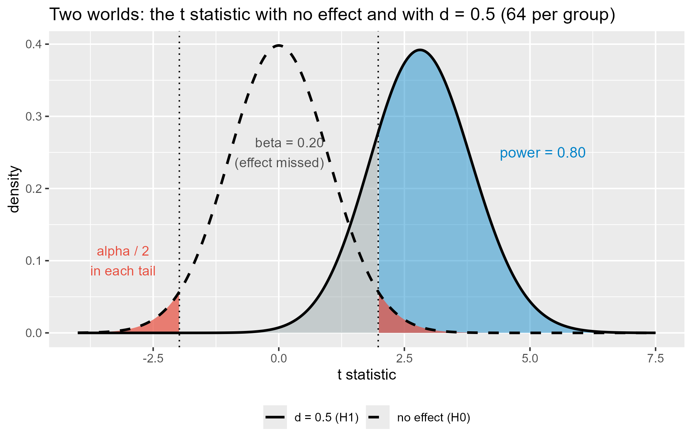
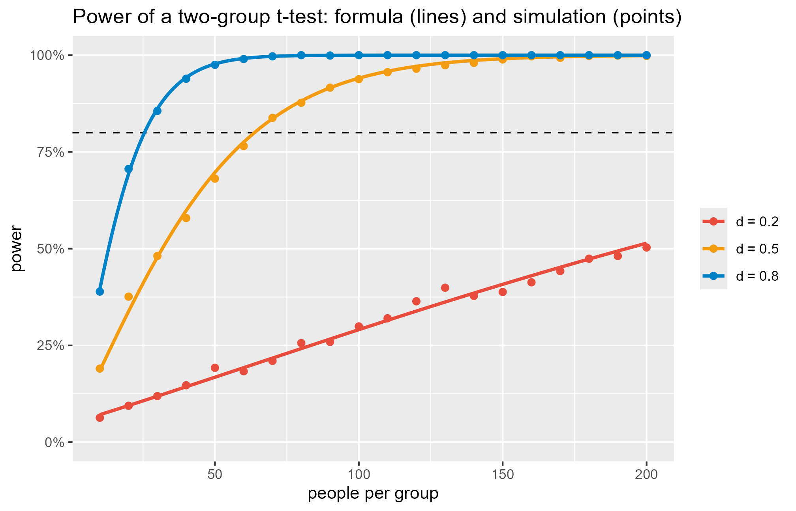
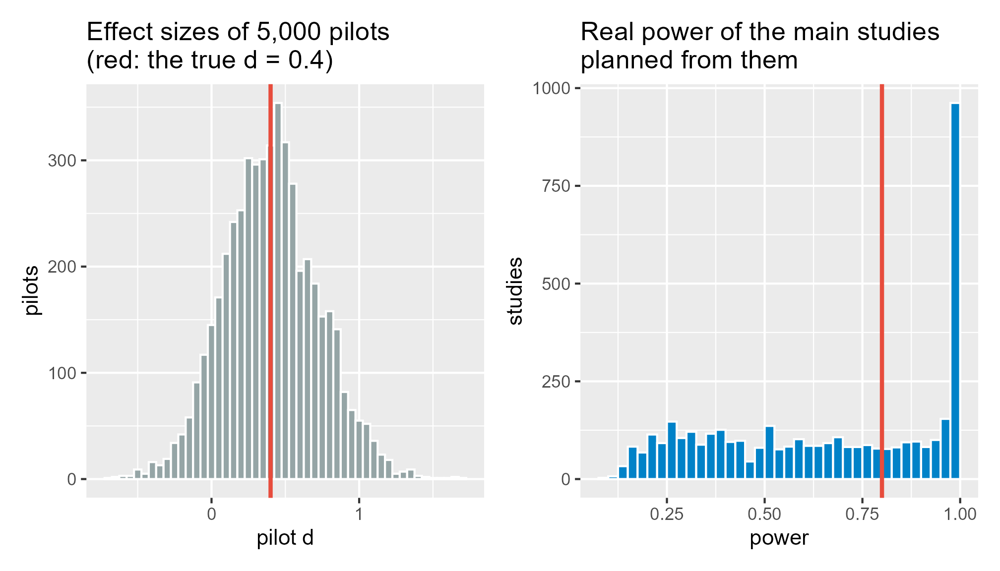
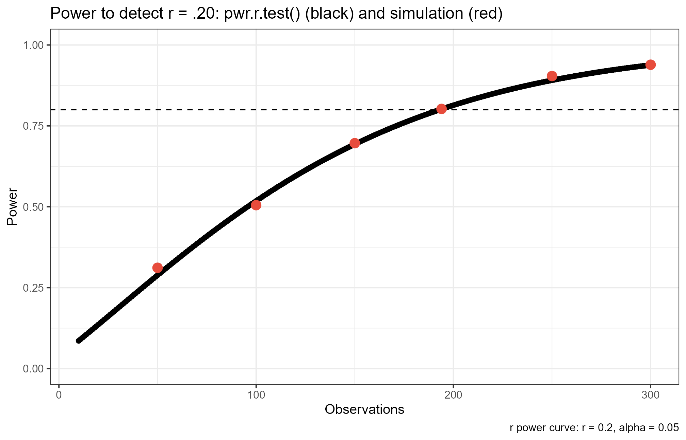
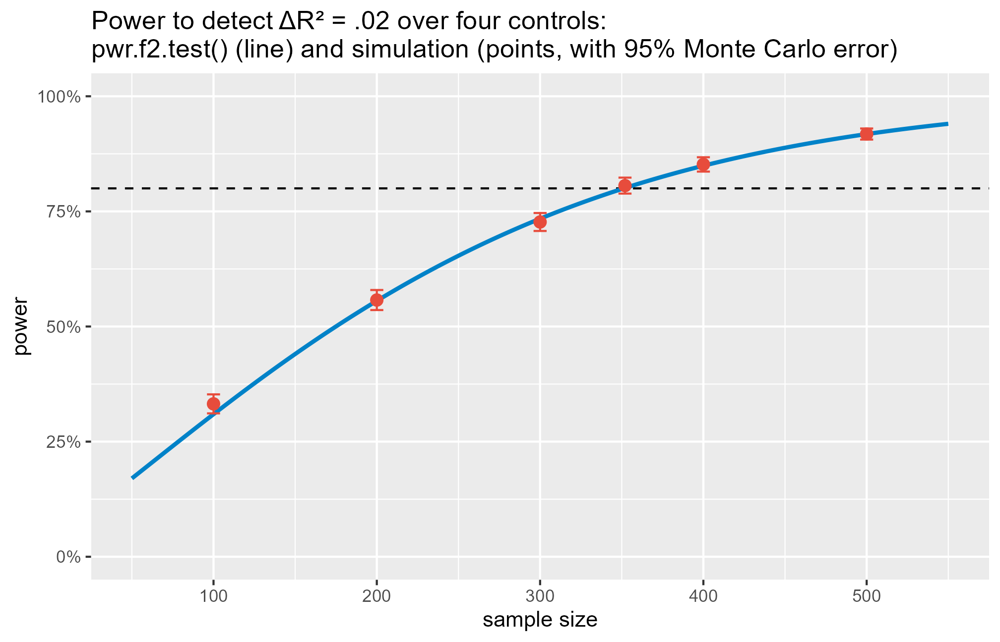
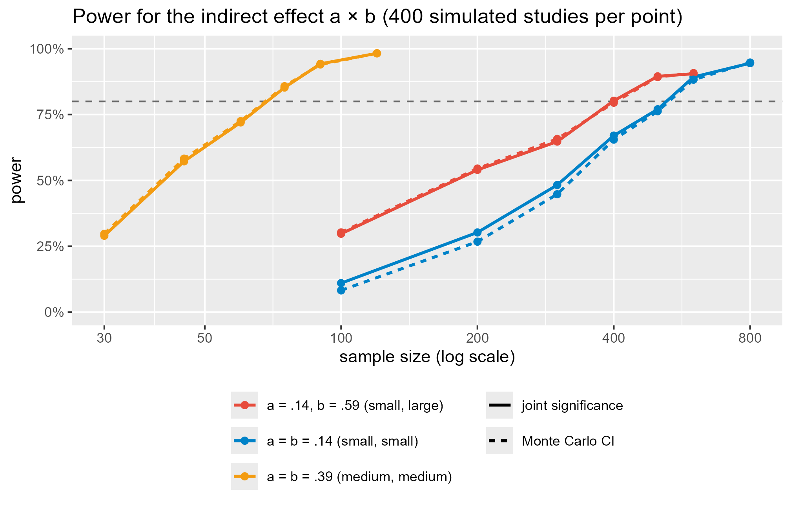
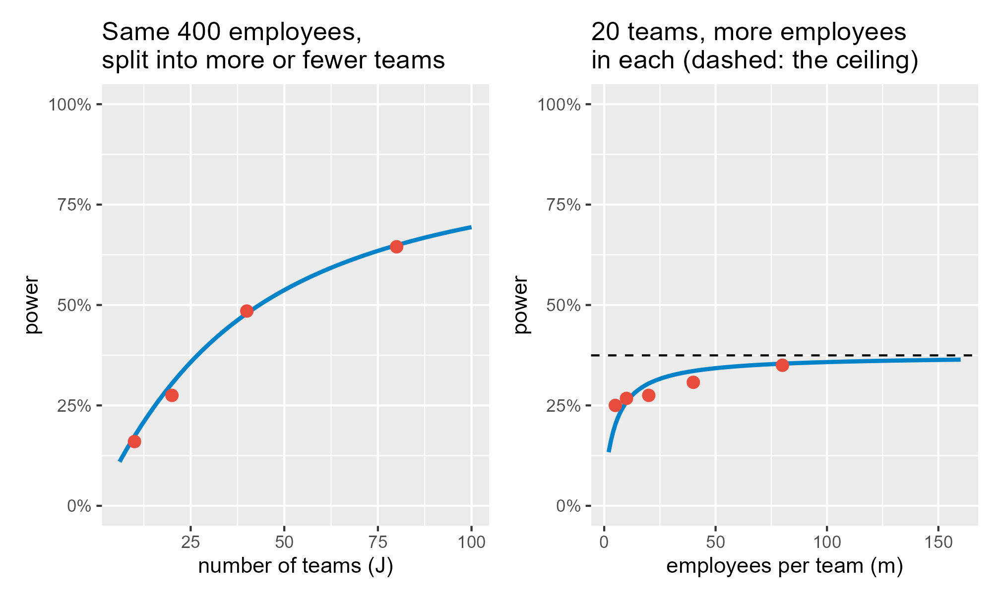
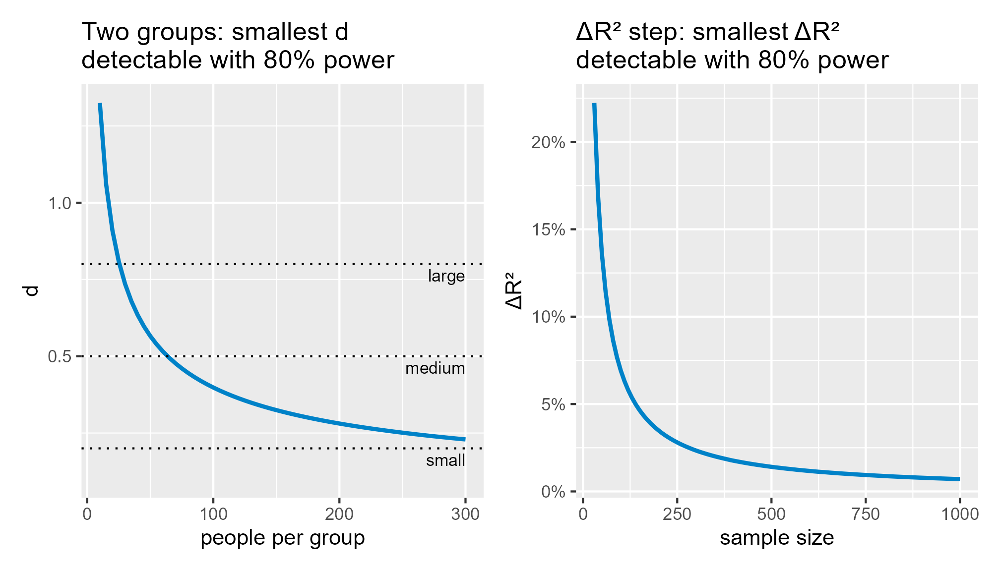
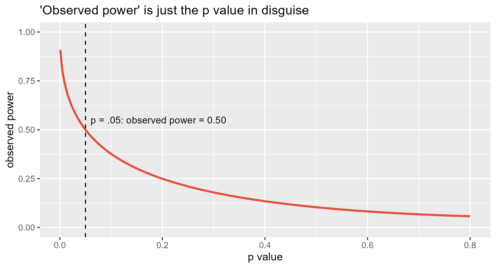

Code
library(pwr) # power formulas: pwr.t.test(), pwr.r.test(), pwr.f2.test()
library(nlme) # lme(): multilevel models (section 7)
library(ggplot2)
library(patchwork) # put plots side by sideBefore collecting data, every study has to answer one question: how many participants?
Statistical power is the probability that a study finds an effect (a significant result) when the effect really exists. Four quantities are tied together:
| Quantity | Symbol | Usual choice |
|---|---|---|
| Significance level: the chance of a false positive when there is no effect | \(\alpha\) | .05 |
| Power: the chance of a significant result when the effect is real | \(1 - \beta\) | .80 or .90 |
| Effect size: how large the effect is assumed to be | \(d\), \(r\), \(f^2\), … | from theory, earlier studies or the smallest effect that would matter |
| Sample size | \(n\) | what we want to find |
Fix any three and the fourth follows. For simple analyses there are formulas, which the pwr package implements. For anything more complex (a mediation model, employees nested in teams, missing data, a non-normal outcome) there is one method that always works: simulate the study you plan. This tutorial does both for four common designs, and checks the simulations against the formulas wherever a formula exists.
Take a study comparing two groups of 64 people each, where the true difference is half a standard deviation (\(d = 0.5\)). We test with a two-sided t-test at \(\alpha = .05\).
If there were no effect, the t statistic would follow the usual t distribution around 0 (the dashed curve below). With a true effect of \(d\), it follows a noncentral t distribution, shifted to the right by the noncentrality parameter
\[\delta = d \sqrt{\frac{n}{2}} = 0.5 \times \sqrt{\frac{64}{2}} = 2.83\]
where \(n\) is the size of each group. We call a result significant when \(|t|\) is beyond the critical value \(t_{crit}\).
n_demo <- 64; d_demo <- 0.5
df_demo <- 2 * n_demo - 2
ncp_demo <- d_demo * sqrt(n_demo / 2)
t_crit <- qt(0.975, df_demo)
grid_t <- seq(-4, 7.5, length.out = 600)
curves <- rbind(data.frame(t = grid_t, density = dt(grid_t, df_demo), world = "no effect (H0)"),
data.frame(t = grid_t, density = dt(grid_t, df_demo, ncp = ncp_demo), world = "d = 0.5 (H1)"))
h0 <- subset(curves, world == "no effect (H0)")
h1 <- subset(curves, world == "d = 0.5 (H1)")
ggplot() +
geom_area(data = subset(h1, t >= t_crit), aes(t, density), fill = "#0082c8", alpha = 0.45) +
geom_area(data = subset(h1, t < t_crit), aes(t, density), fill = "#95A5A6", alpha = 0.45) +
geom_area(data = subset(h0, t >= t_crit), aes(t, density), fill = "#E74C3C", alpha = 0.7) +
geom_area(data = subset(h0, t <= -t_crit), aes(t, density), fill = "#E74C3C", alpha = 0.7) +
geom_line(data = curves, aes(t, density, linetype = world), linewidth = 0.9) +
geom_vline(xintercept = c(-t_crit, t_crit), linetype = "dotted") +
annotate("text", x = 4.4, y = 0.25, label = sprintf("power = %.2f", 1 - pt(t_crit, df_demo, ncp_demo)),
colour = "#0082c8", size = 3.8, hjust = 0) +
annotate("text", x = 0.9, y = 0.25, label = sprintf("beta = %.2f\n(effect missed)", pt(t_crit, df_demo, ncp_demo)),
colour = "grey30", size = 3.5, hjust = 1) +
annotate("text", x = -3.1, y = 0.1, label = "alpha / 2\nin each tail", colour = "#E74C3C", size = 3.5) +
scale_linetype_manual(values = c("no effect (H0)" = "dashed", "d = 0.5 (H1)" = "solid")) +
labs(title = "Two worlds: the t statistic with no effect and with d = 0.5 (64 per group)",
x = "t statistic", y = "density", linetype = NULL) +
theme(legend.position = "bottom")
A larger effect or a larger sample moves the solid curve further to the right, and the blue area grows. That is all a power analysis does: it finds the \(n\) that moves the curve far enough.
A simulation needs no formula. It copies, many times over, exactly what we will do with the real data:
The two-group study of section 1, written as plainly as possible:
set.seed(1)
R <- 2000 # number of simulated studies
significant <- logical(R)
for (r in 1:R) {
control <- rnorm(64, mean = 0, sd = 1) # step 2: one data set of the planned size
treatment <- rnorm(64, mean = 0.5, sd = 1)
significant[r] <- t.test(treatment, control, var.equal = TRUE)$p.value < 0.05 # step 3
}
power_loop <- mean(significant) # step 4: the share of significant results
power_loop[1] 0.7995Each simulated study is a coin toss that comes up “significant” with probability equal to the power \(p\). After \(R\) tosses, the share of significant results has a Monte Carlo standard error of
\[SE = \sqrt{\frac{p\,(1 - p)}{R}}\]
replications se_at_power_.80
1 500 0.0179
2 1000 0.0126
3 2000 0.0089
4 5000 0.0057
5 10000 0.0040With 2,000 replications our estimate 0.799 has a standard error of 0.009, so the true power is within about \(\pm\) 0.018 of it. To pin a power of .80 down to \(\pm .01\) (95% confidence) takes \(R = 0.8 \times 0.2 \times (1.96 / 0.01)^2 \approx\) 6,147 replications. A thousand or two is usually enough to choose a sample size; report \(R\) and the standard error with the result.
A loop is easy to read but slow when there are many sample sizes to try. The same simulation can be written with matrices, one simulated study per row:
sim_t_power <- function(n, d, R) {
g1 <- matrix(rnorm(R * n), nrow = R) # R studies (rows) of n people (columns)
g2 <- matrix(rnorm(R * n, mean = d), nrow = R)
m1 <- rowMeans(g1); m2 <- rowMeans(g2)
v1 <- rowSums((g1 - m1)^2) / (n - 1); v2 <- rowSums((g2 - m2)^2) / (n - 1)
t <- (m2 - m1) / sqrt((v1 + v2) / n) # Student's t for two groups of equal size
mean(abs(t) > qt(0.975, df = 2 * n - 2))
}
set.seed(2)
power_fast <- sim_t_power(64, 0.5, 2000)
power_fast[1] 0.802For two groups the formula exists. pwr.t.test() solves for whichever argument is left out:
Two-sample t test power calculation
n = 63.76561
d = 0.5
sig.level = 0.05
power = 0.8
alternative = two.sided
NOTE: n is number in *each* groupn is the size of each group (the note says so): 63.8, so we round up to 64 per group, 128 in total.d, sig.level and power repeat what we gave. Leave out n and give power to get a sample size; leave out power and give n to get the power of a planned study; leave out d to get the smallest effect a study can detect (section 8).alternative = two.sided: the test looks for a difference in either direction. A one-sided test needs fewer people, but only if the direction was fixed in advance.The formula behind it is the noncentral t of section 1, which we can write ourselves:
power_t <- function(n, d, alpha = 0.05) { # exact power of a two-sided, two-sample t-test
df <- 2 * n - 2; ncp <- d * sqrt(n / 2); crit <- qt(1 - alpha / 2, df)
1 - pt(crit, df, ncp) + pt(-crit, df, ncp)
}
round(c(formula = power_t(64, 0.5), simulation_loop = power_loop, simulation_fast = power_fast), 3) formula simulation_loop simulation_fast
0.801 0.799 0.802 The simulations agree with the formula within their Monte Carlo error.
The power of every sample size from 10 to 200 per group, for a small, a medium and a large effect, by formula (lines) and by simulation (points, 1,000 studies each):
set.seed(3)
curve_n <- seq(10, 200, by = 10)
effects <- c(0.2, 0.5, 0.8)
formula_curves <- expand.grid(n = 10:200, d = effects)
formula_curves$power <- power_t(formula_curves$n, formula_curves$d)
sim_points <- expand.grid(n = curve_n, d = effects)
sim_points$power <- mapply(sim_t_power, sim_points$n, sim_points$d, R = 1000)
ggplot(formula_curves, aes(n, power, colour = factor(d))) +
geom_hline(yintercept = 0.8, linetype = "dashed") +
geom_line(linewidth = 1) +
geom_point(data = sim_points, size = 1.8) +
scale_colour_manual(values = c("0.2" = "#E74C3C", "0.5" = "#f39c12", "0.8" = "#0082c8"),
labels = c("d = 0.2", "d = 0.5", "d = 0.8")) +
scale_y_continuous(limits = c(0, 1), labels = scales::percent) +
labs(title = "Power of a two-group t-test: formula (lines) and simulation (points)",
x = "people per group", y = "power", colour = NULL)
d per_group total
1 0.2 394 788
2 0.3 176 352
3 0.4 100 200
4 0.5 64 128
5 0.8 26 52Halving the effect roughly quadruples the sample: \(n\) grows with \(1/d^2\). A small effect needs 394 people per group; a large one only 26.
The answer depends far more on the assumed effect size than on anything else, so this is the decision that matters.
It is tempting to run a small pilot study, compute its \(d\), and plan the main study from it. A simulation shows why this goes wrong. The true effect is \(d = 0.4\), which needs 100 people per group. We simulate 5,000 pilot studies of 20 people per group. A researcher abandons the idea if the pilot \(d\) is below 0.1, and otherwise plans the main study for 80% power at the pilot’s \(d\):
set.seed(4)
n_pilot <- 20; d_true <- 0.4; R_pilot <- 5000
g1 <- matrix(rnorm(R_pilot * n_pilot), R_pilot)
g2 <- matrix(rnorm(R_pilot * n_pilot, mean = d_true), R_pilot)
pooled_sd <- sqrt((apply(g1, 1, var) + apply(g2, 1, var)) / 2)
pilot_d <- (rowMeans(g2) - rowMeans(g1)) / pooled_sd # the effect size each pilot finds
go_ahead <- pilot_d >= 0.1 # pilots that look promising enough
# sample size per group for 80% power at the pilot's d (normal approximation)
planned_n <- ceiling(2 * (qnorm(0.975) + qnorm(0.8))^2 / pilot_d[go_ahead]^2)
achieved_power <- power_t(planned_n, d_true) # the power these studies really have
round(c(pilot_d_from = quantile(pilot_d, 0.05), pilot_d_to = quantile(pilot_d, 0.95),
abandoned = mean(!go_ahead), median_planned_n = median(planned_n),
median_achieved_power = median(achieved_power),
share_power_below_.5 = mean(achieved_power < 0.5)), 2) pilot_d_from.5% pilot_d_to.95% abandoned median_planned_n median_achieved_power share_power_below_.5
-0.10 0.95 0.17 74.00 0.68 0.34 p_a <- ggplot(data.frame(d = pilot_d), aes(d)) +
geom_histogram(binwidth = 0.05, fill = "#95A5A6", colour = "white") +
geom_vline(xintercept = d_true, colour = "#E74C3C", linewidth = 1) +
labs(title = "Effect sizes of 5,000 pilots\n(red: the true d = 0.4)", x = "pilot d", y = "pilots")
p_b <- ggplot(data.frame(power = achieved_power), aes(power)) +
geom_histogram(binwidth = 0.025, fill = "#0082c8", colour = "white", boundary = 0) +
geom_vline(xintercept = 0.8, colour = "#E74C3C", linewidth = 1) +
labs(title = "Real power of the main studies\nplanned from them", x = "power", y = "studies")
p_a + p_b
The pilots’ effect sizes run from about -0.10 to 0.95 (90% of them), because 20 people per group estimate \(d\) very roughly. 17% of good ideas are abandoned. Of the studies that go ahead, half have a power below 0.68, and 34% have less than 50%: the pilots that happened to overestimate the effect lead to studies that are too small. Albers and Lakens (2018) call this follow-up bias. Use a pilot to test the procedure, not to estimate the effect size.
compute_power_r()How many people are needed to detect a correlation of \(r = .20\), a typical effect in individual-differences research? pwr.r.test() answers with Fisher’s \(z\) approximation:
approximate correlation power calculation (arctangh transformation)
n = 193.0867
r = 0.2
sig.level = 0.05
power = 0.8
alternative = two.sidedThe rwf package draws the whole power curve with compute_power_r(), which calls pwr.r.test() for every sample size from 10 to n. We add simulated points (2,000 studies each) on top:
sim_r_power <- function(n, rho, R) {
x <- matrix(rnorm(R * n), R)
y <- rho * x + sqrt(1 - rho^2) * matrix(rnorm(R * n), R) # correlation rho with x
xc <- x - rowMeans(x); yc <- y - rowMeans(y)
r <- rowSums(xc * yc) / sqrt(rowSums(xc^2) * rowSums(yc^2))
t <- r * sqrt(n - 2) / sqrt(1 - r^2) # the usual test of a correlation
mean(abs(t) > qt(0.975, n - 2))
}
set.seed(5)
r_points <- data.frame(n = c(50, 100, 150, 194, 250, 300))
r_points$power <- sapply(r_points$n, sim_r_power, rho = 0.2, R = 2000)
power_r <- compute_power_r(n = 300, r = 0.2, sig.level = 0.05, alternative = "two.sided")
power_r$plot +
geom_hline(yintercept = 0.8, linetype = "dashed") +
geom_point(data = r_points, colour = "#E74C3C", size = 3) +
labs(title = "Power to detect r = .20: pwr.r.test() (black) and simulation (red)")
formula_at_194 simulation_at_194
0.8018684 0.8025000 With 194 people the power is about .80 by both methods. The formula is an approximation, but a very good one.
In a hierarchical regression we test whether a new predictor adds explained variance over and above others. Suppose four control variables (say age, gender, education and experience) explain 10% of the variance of job performance, and we expect a new test to add \(\Delta R^2 = .02\). The test correlates \(\rho = .3\) with the controls, so part of what it measures they measure too. How many people do we need?
The effect size for the \(F\)-change test is Cohen’s \(f^2\), which divides the added variance by what the full model leaves unexplained:
\[f^2 = \frac{\Delta R^2}{1 - R^2_{full}} = \frac{.02}{1 - .12} = 0.0227\]
Multiple regression power calculation
u = 1
v = 345.2811
f2 = 0.02272727
sig.level = 0.05
power = 0.8[1] 352u is the numerator degrees of freedom: the number of predictors added in the step (1 here).v is the denominator degrees of freedom, \(n - k_{full} - 1\), where \(k_{full}\) is the number of predictors in the full model. So the sample size is \(n = v + k_{full} + 1\) = 345.3 + 5 + 1, rounded up to 352.f2, sig.level, power: as given. pwr uses the noncentrality \(\lambda = f^2 (u + v + 1)\), about \(f^2 \times n\).Because \(f^2\) divides by \(1 - R^2_{full}\), the same \(\Delta R^2\) is easier to detect when the controls already explain a lot: there is less noise left.
r2_controls f2 n
1 0.0 0.0204 391
2 0.1 0.0227 352
3 0.3 0.0294 273
4 0.5 0.0417 195To simulate, we build a population with exactly these properties. The four controls \(X_1, \dots, X_4\) are independent standard normal variables; the new predictor is \(Z = \rho\,\bar X^* + \sqrt{1 - \rho^2}\,U\), where \(\bar X^* = (X_1 + \dots + X_4)/2\) has variance 1, so the controls explain \(\rho^2\) of \(Z\)’s variance. The outcome is \(y = \beta \sum X_k + \gamma Z + e\) with variance 1. \(Z\)’s unique contribution is \(\gamma^2 (1 - \rho^2) = \Delta R^2\), which fixes \(\gamma\); \(\beta\) is then chosen so that \(R^2_{full} = .12\).
rho <- 0.3
gamma <- sqrt(delta_r2 / (1 - rho^2))
beta <- uniroot(function(b) 4 * (b + gamma * rho / 2)^2 + gamma^2 * (1 - rho^2) - r2_full, c(0, 1))$root
sim_dr2_power <- function(n, R) {
mean(replicate(R, {
X <- matrix(rnorm(n * 4), n)
Z <- rho * rowSums(X) / 2 + sqrt(1 - rho^2) * rnorm(n)
y <- X %*% rep(beta, 4) + gamma * Z + rnorm(n, sd = sqrt(1 - r2_full))
rss_small <- sum(.lm.fit(cbind(1, X), y)$residuals^2) # step 1: controls only
rss_full <- sum(.lm.fit(cbind(1, X, Z), y)$residuals^2) # step 2: + the new predictor
F_change <- (rss_small - rss_full) / (rss_full / (n - k_full - 1))
F_change > qf(0.95, 1, n - k_full - 1)
}))
}
power_f2 <- function(n) { v <- n - k_full - 1; 1 - pf(qf(0.95, 1, v), 1, v, ncp = f2 * (1 + v + 1)) }
set.seed(6)
dr2_points <- data.frame(n = c(100, 200, 300, n_f2, 400, 500))
dr2_points$power <- sapply(dr2_points$n, sim_dr2_power, R = 2000)
dr2_points$formula <- power_f2(dr2_points$n)
round(dr2_points, 3) n power formula
1 100 0.332 0.310
2 200 0.557 0.556
3 300 0.727 0.734
4 352 0.806 0.801
5 400 0.852 0.849
6 500 0.918 0.918ggplot(data.frame(n = 50:550), aes(n, power_f2(n))) +
geom_hline(yintercept = 0.8, linetype = "dashed") +
geom_line(linewidth = 1, colour = "#0082c8") +
geom_errorbar(data = dr2_points, aes(y = power, ymin = power - 1.96 * mc_se(power, 2000),
ymax = power + 1.96 * mc_se(power, 2000)), width = 8, colour = "#E74C3C") +
geom_point(data = dr2_points, aes(y = power), colour = "#E74C3C", size = 2.5) +
scale_y_continuous(limits = c(0, 1), labels = scales::percent) +
labs(title = "Power to detect ΔR² = .02 over four controls:\npwr.f2.test() (line) and simulation (points, with 95% Monte Carlo error)",
x = "sample size", y = "power")
The simulation agrees with the formula. Where they could differ is when the formula’s assumptions fail (skewed outcomes, missing data, predictors with outliers); then only the simulation is right, because we can build any of these into it.
In a mediation model, \(X\) affects \(M\) (path \(a\)), which affects \(Y\) (path \(b\)), and the indirect effect is \(a \times b\). There is no simple formula for its power, so here simulation is the standard method.
\[M = a X + e_M, \qquad Y = b M + c' X + e_Y\]
We simulate standardised variables (all with variance 1) and no direct effect (\(c' = 0\)). Inside the loop we need a test of \(ab\) that is fast:
The bootstrap confidence interval, the usual choice for real data, refits the model on hundreds of resamples. Inside a simulation that means thousands of studies × a thousand resamples × every sample size, which takes far longer for a similar answer, as we check below.
sim_mediation <- function(n, a, b, R, draws = 1000) {
t(replicate(R, {
x <- rnorm(n)
m <- a * x + rnorm(n, sd = sqrt(1 - a^2)) # var(m) = 1
y <- b * m + rnorm(n, sd = sqrt(1 - b^2)) # var(y) = 1, c' = 0
fit_a <- .lm.fit(cbind(1, x), m)
a_hat <- fit_a$coefficients[2]
se_a <- sqrt(sum(fit_a$residuals^2) / (n - 2) / sum((x - mean(x))^2))
Xb <- cbind(1, m, x)
fit_b <- .lm.fit(Xb, y)
b_hat <- fit_b$coefficients[2]
se_b <- sqrt(sum(fit_b$residuals^2) / (n - 3) * solve(crossprod(Xb))[2, 2])
joint <- abs(a_hat / se_a) > qt(0.975, n - 2) && abs(b_hat / se_b) > qt(0.975, n - 3)
ab <- rnorm(draws, a_hat, se_a) * rnorm(draws, b_hat, se_b) # Monte Carlo draws of a*b
ci <- quantile(ab, c(0.025, 0.975))
c(n = n, joint = joint, monte_carlo = ci[1] > 0 || ci[2] < 0)
}))
}Three scenarios, using Cohen’s labels for the paths: two small paths (\(a = b = .14\)), two medium paths (\(a = b = .39\)), and a small \(a\) with a large \(b\) (\(.14\) and \(.59\)). 400 studies per sample size:
scenarios <- list("a = b = .14 (small, small)" = list(a = 0.14, b = 0.14, n = c(100, 200, 300, 400, 500, 600, 800)),
"a = b = .39 (medium, medium)" = list(a = 0.39, b = 0.39, n = c(30, 45, 60, 75, 90, 120)),
"a = .14, b = .59 (small, large)" = list(a = 0.14, b = 0.59, n = c(100, 200, 300, 400, 500, 600)))
set.seed(7)
med <- do.call(rbind, lapply(names(scenarios), function(s) {
sc <- scenarios[[s]]
out <- do.call(rbind, lapply(sc$n, function(n) sim_mediation(n, sc$a, sc$b, R = 400)))
data.frame(scenario = s, out)
}))
med_power <- aggregate(cbind(joint, monte_carlo) ~ scenario + n, data = med, FUN = mean)
med_power[order(med_power$scenario, med_power$n), ] scenario n joint monte_carlo
6 a = .14, b = .59 (small, large) 100 0.2975 0.3025
9 a = .14, b = .59 (small, large) 200 0.5400 0.5450
11 a = .14, b = .59 (small, large) 300 0.6475 0.6575
13 a = .14, b = .59 (small, large) 400 0.8025 0.7950
15 a = .14, b = .59 (small, large) 500 0.8950 0.8925
17 a = .14, b = .59 (small, large) 600 0.9050 0.9075
7 a = b = .14 (small, small) 100 0.1100 0.0825
10 a = b = .14 (small, small) 200 0.3025 0.2675
12 a = b = .14 (small, small) 300 0.4825 0.4475
14 a = b = .14 (small, small) 400 0.6700 0.6550
16 a = b = .14 (small, small) 500 0.7700 0.7625
18 a = b = .14 (small, small) 600 0.8925 0.8825
19 a = b = .14 (small, small) 800 0.9450 0.9475
1 a = b = .39 (medium, medium) 30 0.2900 0.2975
2 a = b = .39 (medium, medium) 45 0.5725 0.5825
3 a = b = .39 (medium, medium) 60 0.7200 0.7250
4 a = b = .39 (medium, medium) 75 0.8525 0.8575
5 a = b = .39 (medium, medium) 90 0.9425 0.9400
8 a = b = .39 (medium, medium) 120 0.9825 0.9825To read off the sample size for 80% power between the simulated points, fit a logistic curve of “significant” on \(\log n\) to all the simulated studies of a scenario, and solve it for .80:
n_for_80 <- function(sig, n) { fit <- glm(sig ~ log(n), family = binomial); exp((qlogis(0.8) - coef(fit)[1]) / coef(fit)[2]) }
med_n80 <- do.call(rbind, lapply(split(med, med$scenario), function(s)
data.frame(scenario = s$scenario[1], joint = ceiling(n_for_80(s$joint, s$n)),
monte_carlo = ceiling(n_for_80(s$monte_carlo, s$n)))))
med_n80 scenario joint monte_carlo
a = .14, b = .59 (small, large) a = .14, b = .59 (small, large) 395 394
a = b = .14 (small, small) a = b = .14 (small, small) 512 521
a = b = .39 (medium, medium) a = b = .39 (medium, medium) 64 64med_long <- rbind(data.frame(med_power[, c("scenario", "n")], test = "joint significance", power = med_power$joint),
data.frame(med_power[, c("scenario", "n")], test = "Monte Carlo CI", power = med_power$monte_carlo))
ggplot(med_long, aes(n, power, colour = scenario, linetype = test)) +
geom_hline(yintercept = 0.8, linetype = "dashed", colour = "grey40") +
geom_line(linewidth = 0.9) +
geom_point(size = 1.8) +
scale_colour_manual(values = c("#E74C3C", "#0082c8", "#f39c12")) +
scale_x_log10(breaks = c(30, 50, 100, 200, 400, 800)) + # log scale: the three ranges differ a lot
scale_y_continuous(limits = c(0, 1), labels = scales::percent) +
labs(title = "Power for the indirect effect a × b (400 simulated studies per point)",
x = "sample size (log scale)", y = "power", colour = NULL, linetype = NULL) +
guides(colour = guide_legend(ncol = 1), linetype = guide_legend(ncol = 1)) +
theme(legend.position = "bottom")
We check one design point (two medium paths, \(n = 60\)) on the same 200 data sets with all three tests, and time them:
set.seed(8)
n_b <- 60; a_b <- 0.39; b_b <- 0.39; R_b <- 200; B <- 1000
datasets <- replicate(R_b, {
x <- rnorm(n_b); m <- a_b * x + rnorm(n_b, sd = sqrt(1 - a_b^2)); y <- b_b * m + rnorm(n_b, sd = sqrt(1 - b_b^2))
list(data.frame(x, m, y))
})
test_dataset <- function(d, bootstrap) {
fa <- .lm.fit(cbind(1, d$x), d$m); Xb <- cbind(1, d$m, d$x); fb <- .lm.fit(Xb, d$y)
a_hat <- fa$coefficients[2]; b_hat <- fb$coefficients[2]
se_a <- sqrt(sum(fa$residuals^2) / (n_b - 2) / sum((d$x - mean(d$x))^2))
se_b <- sqrt(sum(fb$residuals^2) / (n_b - 3) * solve(crossprod(Xb))[2, 2])
if (!bootstrap) {
ci <- quantile(rnorm(1000, a_hat, se_a) * rnorm(1000, b_hat, se_b), c(0.025, 0.975))
} else {
ab <- replicate(B, { i <- sample.int(n_b, n_b, replace = TRUE)
.lm.fit(cbind(1, d$x[i]), d$m[i])$coefficients[2] * .lm.fit(cbind(1, d$m[i], d$x[i]), d$y[i])$coefficients[2] })
ci <- quantile(ab, c(0.025, 0.975))
}
c(joint = abs(a_hat / se_a) > qt(0.975, n_b - 2) && abs(b_hat / se_b) > qt(0.975, n_b - 3),
significant = unname(ci[1] > 0 || ci[2] < 0))
}
time_mc <- system.time(res_mc <- t(sapply(datasets, test_dataset, bootstrap = FALSE)))["elapsed"]
time_boot <- system.time(res_boot <- t(sapply(datasets, test_dataset, bootstrap = TRUE)))["elapsed"]
round(c(joint_significance = mean(res_mc[, "joint"]), monte_carlo = mean(res_mc[, "significant"]),
bootstrap = mean(res_boot[, "significant"]), agreement_mc_vs_boot = mean(res_mc[, "significant"] == res_boot[, "significant"]),
seconds_monte_carlo = unname(time_mc), seconds_bootstrap = unname(time_boot)), 3) joint_significance monte_carlo bootstrap agreement_mc_vs_boot seconds_monte_carlo seconds_bootstrap
0.685 0.670 0.715 0.885 0.080 6.470 The three powers are similar (.685, .670 and .715, each give or take about .06 with 200 data sets; the percentile bootstrap tends to be a little more liberal in small samples). Near the 80% mark many data sets are borderline, so the bootstrap and the Monte Carlo interval disagree on 12% of them, in both directions. But the bootstrap took about 81 times as long. For a whole power curve, use a fast test (and, to be safe, plan a little above 80%); analyse the real data with the bootstrap.
Many studies sample groups: employees in teams, pupils in classes, patients in clinics. People in the same group are alike (the intraclass correlation, ICC, of the multilevel tutorial), so each extra person in a group adds less new information than the first.
The design effect says how much the clustering inflates the variance of a mean, for \(m\) people per group:
\[\text{design effect} = 1 + (m - 1)\,\text{ICC}, \qquad n_{effective} = \frac{n}{\text{design effect}}\]
A well-being programme is given to whole teams: half of the teams take part (a cluster-randomised study). We expect it to raise well-being by \(d = 0.3\) standard deviations, and the ICC of well-being within teams is .15. With \(J\) teams of \(m\) employees, the model is
\[\text{wellbeing}_{ij} = \gamma_{00} + \gamma_{01}\,\text{programme}_j + u_{0j} + r_{ij}\]
For a balanced design the test of \(\gamma_{01}\) in this random-intercept model is the same as a t-test on the team means, with \(J - 2\) degrees of freedom. Check it on one simulated data set:
icc <- 0.15; d_team <- 0.3
sim_teams <- function(J, m) {
team <- rep(1:J, each = m)
programme <- rep(rep(0:1, length.out = J), each = m) # half of the teams take part
u <- rnorm(J, sd = sqrt(icc)) # team effects: ICC of the total variance 1
data.frame(wellbeing = d_team * programme + u[team] + rnorm(J * m, sd = sqrt(1 - icc)),
programme, team = factor(team))
}
set.seed(9)
one_study <- sim_teams(J = 20, m = 20)
fit_team <- lme(wellbeing ~ programme, random = ~ 1 | team, data = one_study)
team_means <- aggregate(wellbeing ~ team + programme, data = one_study, FUN = mean)
round(c(lme_t = summary(fit_team)$tTable["programme", "t-value"], lme_df = summary(fit_team)$tTable["programme", "DF"],
t_test_on_team_means = unname(t.test(wellbeing ~ factor(programme, levels = 1:0), data = team_means,
var.equal = TRUE)$statistic)), 3) lme_t lme_df t_test_on_team_means
-1.016 18.000 -1.016 That gives a formula. The variance of a team mean is \(\text{ICC} + (1 - \text{ICC})/m\), the two arms have \(J/2\) teams each, so the noncentrality is
\[\delta = \frac{d}{\sqrt{\dfrac{4}{J}\left(\text{ICC} + \dfrac{1 - \text{ICC}}{m}\right)}}, \qquad df = J - 2\]
Now simulate with lme(), 400 studies per design: first four ways of spending the same 400 employees, then 20 teams with more and more employees each:
R_team <- 400
designs <- unique(rbind(data.frame(J = c(10, 20, 40, 80), m = c(40, 20, 10, 5)), # 400 employees in total
data.frame(J = 20, m = c(5, 10, 20, 40, 80)))) # 20 teams, larger and larger
set.seed(10)
designs$simulated <- mapply(function(J, m) mean(replicate(R_team,
summary(lme(wellbeing ~ programme, random = ~ 1 | team, data = sim_teams(J, m)))$tTable["programme", "p-value"] < 0.05)),
designs$J, designs$m)
designs$formula <- power_teams(designs$J, designs$m)
designs$design_effect <- 1 + (designs$m - 1) * icc
designs$effective_n <- designs$J * designs$m / designs$design_effect
round(designs[, c("J", "m", "design_effect", "effective_n", "formula", "simulated")], 3) J m design_effect effective_n formula simulated
1 10 40 6.85 58.394 0.173 0.160
2 20 20 3.85 103.896 0.305 0.275
3 40 10 2.35 170.213 0.479 0.485
4 80 5 1.60 250.000 0.649 0.645
5 20 5 1.60 62.500 0.202 0.250
6 20 10 2.35 85.106 0.259 0.268
8 20 40 6.85 116.788 0.336 0.308
9 20 80 12.85 124.514 0.354 0.350alloc <- subset(designs, J * m == 400)
alloc_curve <- data.frame(J = seq(6, 100, by = 2)); alloc_curve$power <- power_teams(alloc_curve$J, 400 / alloc_curve$J)
more <- subset(designs, J == 20)
more_curve <- data.frame(m = 2:160); more_curve$power <- power_teams(20, more_curve$m)
q1 <- ggplot(alloc_curve, aes(J, power)) +
geom_line(colour = "#0082c8", linewidth = 1) +
geom_point(data = alloc, aes(y = simulated), colour = "#E74C3C", size = 2.5) +
scale_y_continuous(limits = c(0, 1), labels = scales::percent) +
labs(title = "Same 400 employees,\nsplit into more or fewer teams", x = "number of teams (J)", y = "power")
q2 <- ggplot(more_curve, aes(m, power)) +
geom_hline(yintercept = power_teams(20, Inf), linetype = "dashed") +
geom_line(colour = "#0082c8", linewidth = 1) +
geom_point(data = more, aes(y = simulated), colour = "#E74C3C", size = 2.5) +
scale_y_continuous(limits = c(0, 1), labels = scales::percent) +
labs(title = "20 teams, more employees\nin each (dashed: the ceiling)", x = "employees per team (m)", y = "power")
q1 + q2
Now a question about slopes: employees with a higher workload have lower well-being, and we expect this to be weaker in teams with more support from their manager (a cross-level interaction, as in section 8 of the multilevel tutorial):
\[\text{wellbeing}_{ij} = \gamma_{00} + \gamma_{01}\,\text{support}_j + \gamma_{10}\,\text{workload}_{ij} + \gamma_{11}\,\text{support}_j \times \text{workload}_{ij} + u_{0j} + u_{1j}\,\text{workload}_{ij} + r_{ij}\]
We assume \(\gamma_{10} = -0.3\), \(\gamma_{11} = 0.15\) (support, in standard deviations, softens the workload slope by 0.15), \(\gamma_{01} = 0.2\), an ICC of .15 and a slope variance \(\tau_{11} = 0.05\). Workload is centred within teams. 200 studies per design, the same two totals of employees split differently:
sim_cross <- function(J, m, g10 = -0.3, g11 = 0.15, g01 = 0.2, tau11 = 0.05) {
team <- rep(1:J, each = m)
support <- rnorm(J) # team level, standardised
workload <- rnorm(J * m); workload <- workload - ave(workload, team) # centred within teams
u0 <- rnorm(J, sd = sqrt(icc)); u1 <- rnorm(J, sd = sqrt(tau11))
data.frame(wellbeing = g01 * support[team] + (g10 + u1[team]) * workload + g11 * support[team] * workload +
u0[team] + rnorm(J * m, sd = sqrt(1 - icc)),
workload, support = support[team], team = factor(team))
}
cross_p <- function(J, m) tryCatch(
summary(lme(wellbeing ~ workload * support, random = ~ workload | team, data = sim_cross(J, m),
control = lmeControl(opt = "optim")))$tTable["workload:support", "p-value"],
error = function(e) NA) # a fit that fails counts as missing
cross_designs <- data.frame(J = c(20, 40, 80, 40, 80, 160), m = c(20, 10, 5, 20, 10, 5),
total = rep(c(400, 800), each = 3))
set.seed(11)
cross_res <- lapply(seq_len(nrow(cross_designs)), function(i) replicate(200, cross_p(cross_designs$J[i], cross_designs$m[i])))
cross_designs$power <- sapply(cross_res, function(p) mean(p < 0.05, na.rm = TRUE))
cross_designs$failed <- sapply(cross_res, function(p) sum(is.na(p)))
cross_designs J m total power failed
1 20 20 400 0.540 0
2 40 10 400 0.690 0
3 80 5 400 0.695 0
4 40 20 800 0.845 0
5 80 10 800 0.930 0
6 160 5 800 0.945 0Often the sample size is fixed: 120 employees took part, or two classes of 30. Then the useful question is the reverse: what is the smallest effect this sample can detect with 80% power? Leave out the effect size:
[1] 0.5157065 f2 delta_r2
0.04044629 0.03498658 Two groups of 60 can detect \(d \geq\) 0.52; 200 people can detect a \(\Delta R^2 \geq\) 0.035 over the four controls. (\(\Delta R^2\) comes from \(f^2 = \Delta R^2 / (1 - R^2_{controls} - \Delta R^2)\), solved for \(\Delta R^2\).)
sens_t <- data.frame(n = seq(10, 300, by = 5))
sens_t$d <- sapply(sens_t$n, function(n) pwr.t.test(n = n, power = 0.8)$d)
sens_r2 <- data.frame(n = seq(30, 1000, by = 10))
sens_r2$dr2 <- sapply(sens_r2$n, function(n) { f <- pwr.f2.test(u = 1, v = n - k_full - 1, power = 0.8)$f2
f * (1 - r2_controls) / (1 + f) })
s1 <- ggplot(sens_t, aes(n, d)) + geom_line(colour = "#0082c8", linewidth = 1) +
geom_hline(yintercept = c(0.2, 0.5, 0.8), linetype = "dotted") +
annotate("text", x = 300, y = c(0.2, 0.5, 0.8), label = c("small", "medium", "large"),
hjust = 1, vjust = 1.4, size = 3) +
expand_limits(y = 0.1) + # room for the "small" label
labs(title = "Two groups: smallest d\ndetectable with 80% power", x = "people per group", y = "d")
s2 <- ggplot(sens_r2, aes(n, dr2)) + geom_line(colour = "#0082c8", linewidth = 1) +
scale_y_continuous(labels = scales::percent) +
labs(title = "ΔR² step: smallest ΔR²\ndetectable with 80% power", x = "sample size", y = "ΔR²")
s1 + s2
If the smallest detectable effect is larger than any plausible effect, the study can still be useful (to estimate, or as part of a meta-analysis), but a non-significant result will say very little.
“Observed” or post hoc power. Computing power after the study, from the effect size the study found, adds nothing: it is a function of the p value alone (Hoenig & Heisey, 2001). A result with p = .05 always has an “observed power” of about .50, and a non-significant result always has low observed power. For a z-test:
p_values <- seq(0.001, 0.8, length.out = 300)
z_obs <- qnorm(1 - p_values / 2)
observed_power <- pnorm(z_obs - qnorm(0.975)) + pnorm(-z_obs - qnorm(0.975))
ggplot(data.frame(p = p_values, power = observed_power), aes(p, power)) +
geom_line(colour = "#E74C3C", linewidth = 1) +
geom_vline(xintercept = 0.05, linetype = "dashed") +
annotate("text", x = 0.06, y = 0.55, label = sprintf("p = .05: observed power = %.2f",
pnorm(qnorm(0.975) - qnorm(0.975)) + pnorm(-2 * qnorm(0.975))), hjust = 0, size = 3.5) +
scale_y_continuous(limits = c(0, 1)) +
labs(title = "'Observed power' is just the p value in disguise", x = "p value", y = "observed power")
Power belongs to the design, before the data. After the data, report the effect size with its confidence interval.
Forgetting drop-out. If 15% of participants are expected to drop out or give unusable data, recruit \(n / (1 - 0.15)\): for 128 usable cases, 151 people.
Powering the wrong test. If the hypothesis is an interaction, power the interaction, not the main effects: interactions are usually smaller and need much larger samples (section 7). With several hypotheses, each needs enough power, and a corrected \(\alpha\) (for example Bonferroni) needs more people.
Ignoring the clustering. Planning a study of teams or classes as if the people were independent overstates the power, sometimes by a lot (section 7).
Defaults instead of thought. “Medium effect, 80% power” chosen because it is common is not a justification. Say where the effect size comes from (Lakens, 2022).
APA 7th edition asks authors to explain how the sample size was decided. A good justification names the analysis, the effect size and where it comes from, \(\alpha\), the power, the method (formula or simulation, with \(R\)), and any allowance for drop-out. We collect the numbers from the R objects:
n_t <- ceiling(pwr.t.test(d = 0.5, power = 0.8)$n)
n_r <- ceiling(pwr.r.test(r = 0.2, power = 0.8)$n)
n_med <- med_n80$monte_carlo[grepl("medium", med_n80$scenario)]
J_needed <- min(seq(4, 200, by = 2)[power_teams(seq(4, 200, by = 2), 10) >= 0.8]) # teams of 10, even number
set.seed(12)
power_J <- mean(replicate(R_team, summary(lme(wellbeing ~ programme, random = ~ 1 | team,
data = sim_teams(J_needed, 10)))$tTable["programme", "p-value"] < 0.05))
f3 <- function(x) formatC(x, format = "f", digits = 3)Example: sample-size justification (for the hierarchical regression of section 5):
The sample size was chosen to detect an increment of ΔR² = .02 for the new test over four control variables expected to explain 10% of the variance in job performance, f² = 0.023, the smallest increment we considered practically useful. With α = .05, a sample of 352 participants gives a power of .80 for the F-change test (pwr package; Champely, 2020). A simulation with 2,000 replications, in which the new test correlated .30 with the controls, confirmed this (power = .81, Monte Carlo SE = .009). Allowing for 15% unusable responses, we planned to recruit 415 participants.
Table 1
Sample Sizes for 80% Power at α = .05 for the Designs of This Tutorial
| Analysis | Assumed effect | Method | Required N | Simulated power at N |
|---|---|---|---|---|
| Two-group t-test | d = 0.50 | formula | 64 per group | .80 |
| Correlation | r = .20 | formula | 194 | .80 |
| ΔR² step (1 predictor over 4) | ΔR² = .02, f² = .023 | formula | 352 | .81 |
| Indirect effect (two medium paths) | a = b = .39 | simulation (Monte Carlo CI) | 64 | (interpolated) |
| Team-level programme effect (teams of 10, ICC = .15) | d = 0.30 | formula | 84 teams (840 people) | .77 |
Note. Simulated power from 2,000 replications (400 for the team design; Monte Carlo SE ≈ .009 and .020). The mediation sample size was interpolated from simulations with 400 replications per sample size.
Points to remember:
| Power | The chance of a significant result when the effect is real: \(1 - \beta\), usually .80 or .90 |
| What decides it | Effect size (most of all), \(n\), \(\alpha\), and the design (clustering, number of predictors, test) |
| Formulas | pwr.t.test(), pwr.r.test(), pwr.f2.test() (with \(f^2 = \Delta R^2 / (1 - R^2_{full})\) and \(n = v + k + 1\)); rwf’s compute_power_r() for a correlation’s power curve |
| Simulation | Generate data under the assumed model, analyse as planned, repeat \(R\) times, count significant results; works for any design |
| Monte Carlo error | \(\sqrt{p(1 - p)/R}\): about .009 for \(R\) = 2,000 at .80 |
| Mediation | Simulate; test \(ab\) with joint significance or a Monte Carlo CI inside the loop; the weaker path sets \(n\) |
| Multilevel | Plan with the design effect \(1 + (m - 1)\text{ICC}\); more groups beat more people per group for group-level effects |
| Fixed n | Report a sensitivity analysis: the smallest detectable effect |
| Avoid | Observed power, pilot-study effect sizes, default “medium” effects, forgetting drop-out |
Albers, C., & Lakens, D. (2018). When power analyses based on pilot data are biased: Inaccurate effect size estimators and follow-up bias. Journal of Experimental Social Psychology, 74, 187–195.
Arend, M. G., & Schäfer, T. (2019). Statistical power in two-level models: A tutorial based on Monte Carlo simulation. Psychological Methods, 24(1), 1–19.
Champely, S. (2020). pwr: Basic functions for power analysis (R package version 1.3-0). https://CRAN.R-project.org/package=pwr
Cohen, J. (1988). Statistical power analysis for the behavioral sciences (2nd ed.). Lawrence Erlbaum.
Fritz, M. S., & MacKinnon, D. P. (2007). Required sample size to detect the mediated effect. Psychological Science, 18(3), 233–239.
Gignac, G. E., & Szodorai, E. T. (2016). Effect size guidelines for individual differences researchers. Personality and Individual Differences, 102, 74–78.
Hoenig, J. M., & Heisey, D. M. (2001). The abuse of power: The pervasive fallacy of power calculations for data analysis. The American Statistician, 55(1), 19–24.
Lakens, D. (2022). Sample size justification. Collabra: Psychology, 8(1), 33267.
Morris, T. P., White, I. R., & Crowther, M. J. (2019). Using simulation studies to evaluate statistical methods. Statistics in Medicine, 38(11), 2074–2102.
Preacher, K. J., & Selig, J. P. (2012). Advantages of Monte Carlo confidence intervals for indirect effects. Communication Methods and Measures, 6(2), 77–98.
Richard, F. D., Bond, C. F., Jr., & Stokes-Zoota, J. J. (2003). One hundred years of social psychology quantitatively described. Review of General Psychology, 7(4), 331–363.
compute_power_r() on this page---
title: "Power Analysis by Simulation in R: How Many People Do I Need?"
description: "Power and sample size by simulation in R: t-tests, ΔR² steps, mediation and multilevel designs, checked against pwr, with sensitivity analysis and APA reporting."
author: ""
---
```{r options, echo=FALSE, warning=FALSE, message=FALSE}
directory<-if (rstudioapi::isAvailable()) paste0(dirname(rstudioapi::getActiveDocumentContext()$path),"/") else ""
source(paste0(directory, "R/code_options.R"))
source(paste0(directory, "R/code_rwf.R"))
# wider, shorter figures than the site default; no knitr cache: cached chunks would not
# notice an edit to the simulations
knitr::opts_chunk$set(fig.height = 4.5, cache = FALSE)
```
## The question: how many people do I need?
Before collecting data, every study has to answer one question: **how many participants?**
- **Too few**, and a real effect will often be missed. Worse, the effects that do reach significance in a small study are exaggerated: only the lucky, overestimated ones pass the bar.
- **Too many**, and time, money and participants' goodwill are wasted.
**Statistical power** is the probability that a study finds an effect (a significant result) when the effect really exists. Four quantities are tied together:
| Quantity | Symbol | Usual choice |
|---|---|---|
| Significance level: the chance of a false positive when there is no effect | $\alpha$ | .05 |
| Power: the chance of a significant result when the effect is real | $1 - \beta$ | .80 or .90 |
| Effect size: how large the effect is assumed to be | $d$, $r$, $f^2$, ... | from theory, earlier studies or the smallest effect that would matter |
| Sample size | $n$ | what we want to find |
Fix any three and the fourth follows. For simple analyses there are formulas, which the `pwr` package implements. For anything more complex (a mediation model, employees nested in teams, missing data, a non-normal outcome) there is one method that always works: **simulate the study you plan**. This tutorial does both for four common designs, and checks the simulations against the formulas wherever a formula exists.
```{r packages}
library(pwr) # power formulas: pwr.t.test(), pwr.r.test(), pwr.f2.test()
library(nlme) # lme(): multilevel models (section 7)
library(ggplot2)
library(patchwork) # put plots side by side
```
---
## 1. What power is
Take a study comparing two groups of 64 people each, where the true difference is half a standard deviation ($d = 0.5$). We test with a two-sided *t*-test at $\alpha = .05$.
If there were **no** effect, the *t* statistic would follow the usual *t* distribution around 0 (the dashed curve below). With a true effect of $d$, it follows a **noncentral** *t* distribution, shifted to the right by the noncentrality parameter
$$\delta = d \sqrt{\frac{n}{2}} = 0.5 \times \sqrt{\frac{64}{2}} = `r sprintf("%.2f", 0.5 * sqrt(32))`$$
where $n$ is the size of each group. We call a result significant when $|t|$ is beyond the critical value $t_{crit}$.
```{r power_picture}
n_demo <- 64; d_demo <- 0.5
df_demo <- 2 * n_demo - 2
ncp_demo <- d_demo * sqrt(n_demo / 2)
t_crit <- qt(0.975, df_demo)
grid_t <- seq(-4, 7.5, length.out = 600)
curves <- rbind(data.frame(t = grid_t, density = dt(grid_t, df_demo), world = "no effect (H0)"),
data.frame(t = grid_t, density = dt(grid_t, df_demo, ncp = ncp_demo), world = "d = 0.5 (H1)"))
h0 <- subset(curves, world == "no effect (H0)")
h1 <- subset(curves, world == "d = 0.5 (H1)")
ggplot() +
geom_area(data = subset(h1, t >= t_crit), aes(t, density), fill = "#0082c8", alpha = 0.45) +
geom_area(data = subset(h1, t < t_crit), aes(t, density), fill = "#95A5A6", alpha = 0.45) +
geom_area(data = subset(h0, t >= t_crit), aes(t, density), fill = "#E74C3C", alpha = 0.7) +
geom_area(data = subset(h0, t <= -t_crit), aes(t, density), fill = "#E74C3C", alpha = 0.7) +
geom_line(data = curves, aes(t, density, linetype = world), linewidth = 0.9) +
geom_vline(xintercept = c(-t_crit, t_crit), linetype = "dotted") +
annotate("text", x = 4.4, y = 0.25, label = sprintf("power = %.2f", 1 - pt(t_crit, df_demo, ncp_demo)),
colour = "#0082c8", size = 3.8, hjust = 0) +
annotate("text", x = 0.9, y = 0.25, label = sprintf("beta = %.2f\n(effect missed)", pt(t_crit, df_demo, ncp_demo)),
colour = "grey30", size = 3.5, hjust = 1) +
annotate("text", x = -3.1, y = 0.1, label = "alpha / 2\nin each tail", colour = "#E74C3C", size = 3.5) +
scale_linetype_manual(values = c("no effect (H0)" = "dashed", "d = 0.5 (H1)" = "solid")) +
labs(title = "Two worlds: the t statistic with no effect and with d = 0.5 (64 per group)",
x = "t statistic", y = "density", linetype = NULL) +
theme(legend.position = "bottom")
```
- The **red** tails are $\alpha$: the chance of a significant result although nothing is going on (a false positive, type I error). Both tails together make .05.
- The **grey** area is $\beta$: the chance of missing the real effect (a false negative, type II error).
- The **blue** area is **power**, $1 - \beta$. Here it is `r sprintf("%.2f", 1 - pt(t_crit, df_demo, ncp_demo))`.
A larger effect or a larger sample moves the solid curve further to the right, and the blue area grows. That is all a power analysis does: it finds the $n$ that moves the curve far enough.
---
## 2. The general recipe: simulate the study you plan
A simulation needs no formula. It copies, many times over, exactly what we will do with the real data:
1. Write down a **model** for the data, with the effect sizes we assume.
2. **Generate** one data set of the planned size from it.
3. **Analyse** it exactly as planned, and note whether the result is significant.
4. **Repeat** steps 2 and 3 $R$ times. The **power** is the share of significant results.
5. Repeat for other sample sizes, and pick the smallest that gives the power we want.
The two-group study of section 1, written as plainly as possible:
```{r recipe_loop}
set.seed(1)
R <- 2000 # number of simulated studies
significant <- logical(R)
for (r in 1:R) {
control <- rnorm(64, mean = 0, sd = 1) # step 2: one data set of the planned size
treatment <- rnorm(64, mean = 0.5, sd = 1)
significant[r] <- t.test(treatment, control, var.equal = TRUE)$p.value < 0.05 # step 3
}
power_loop <- mean(significant) # step 4: the share of significant results
power_loop
```
### How precise is a simulated power?
Each simulated study is a coin toss that comes up "significant" with probability equal to the power $p$. After $R$ tosses, the share of significant results has a **Monte Carlo standard error** of
$$SE = \sqrt{\frac{p\,(1 - p)}{R}}$$
```{r mc_error}
mc_se <- function(p, R) sqrt(p * (1 - p) / R)
nz <- function(x, d = 2) sub("^0", "", formatC(x, format = "f", digits = d)) # .80 instead of 0.80, for the text
data.frame(replications = c(500, 1000, 2000, 5000, 10000),
se_at_power_.80 = round(mc_se(0.8, c(500, 1000, 2000, 5000, 10000)), 4))
```
With `r format(R, big.mark = ",")` replications our estimate `r sprintf("%.3f", power_loop)` has a standard error of `r sprintf("%.3f", mc_se(power_loop, R))`, so the true power is within about $\pm$ `r sprintf("%.3f", 1.96 * mc_se(power_loop, R))` of it. To pin a power of .80 down to $\pm .01$ (95% confidence) takes $R = 0.8 \times 0.2 \times (1.96 / 0.01)^2 \approx$ `r format(ceiling(0.8 * 0.2 * (1.96 / 0.01)^2), big.mark = ",")` replications. A thousand or two is usually enough to choose a sample size; report $R$ and the standard error with the result.
### Faster: many studies at once
A loop is easy to read but slow when there are many sample sizes to try. The same simulation can be written with matrices, one simulated study per row:
```{r recipe_fast}
sim_t_power <- function(n, d, R) {
g1 <- matrix(rnorm(R * n), nrow = R) # R studies (rows) of n people (columns)
g2 <- matrix(rnorm(R * n, mean = d), nrow = R)
m1 <- rowMeans(g1); m2 <- rowMeans(g2)
v1 <- rowSums((g1 - m1)^2) / (n - 1); v2 <- rowSums((g2 - m2)^2) / (n - 1)
t <- (m2 - m1) / sqrt((v1 + v2) / n) # Student's t for two groups of equal size
mean(abs(t) > qt(0.975, df = 2 * n - 2))
}
set.seed(2)
power_fast <- sim_t_power(64, 0.5, 2000)
power_fast
```
---
## 3. Two groups: the *t*-test
For two groups the formula exists. `pwr.t.test()` solves for whichever argument is left out:
```{r pwr_t}
pwr.t.test(d = 0.5, power = 0.80, sig.level = 0.05)
```
### How to read the output
- **`n`** is the size of **each** group (the note says so): `r sprintf("%.1f", pwr.t.test(d = 0.5, power = 0.8)$n)`, so we round up to **`r ceiling(pwr.t.test(d = 0.5, power = 0.8)$n)` per group**, `r 2 * ceiling(pwr.t.test(d = 0.5, power = 0.8)$n)` in total.
- **`d`**, **`sig.level`** and **`power`** repeat what we gave. Leave out `n` and give `power` to get a sample size; leave out `power` and give `n` to get the power of a planned study; leave out `d` to get the smallest effect a study can detect (section 8).
- **`alternative = two.sided`**: the test looks for a difference in either direction. A one-sided test needs fewer people, but only if the direction was fixed in advance.
The formula behind it is the noncentral *t* of section 1, which we can write ourselves:
```{r power_t_function}
power_t <- function(n, d, alpha = 0.05) { # exact power of a two-sided, two-sample t-test
df <- 2 * n - 2; ncp <- d * sqrt(n / 2); crit <- qt(1 - alpha / 2, df)
1 - pt(crit, df, ncp) + pt(-crit, df, ncp)
}
round(c(formula = power_t(64, 0.5), simulation_loop = power_loop, simulation_fast = power_fast), 3)
```
The simulations agree with the formula within their Monte Carlo error.
### Power curves
The power of every sample size from 10 to 200 per group, for a small, a medium and a large effect, by formula (lines) and by simulation (points, 1,000 studies each):
```{r power_curves}
set.seed(3)
curve_n <- seq(10, 200, by = 10)
effects <- c(0.2, 0.5, 0.8)
formula_curves <- expand.grid(n = 10:200, d = effects)
formula_curves$power <- power_t(formula_curves$n, formula_curves$d)
sim_points <- expand.grid(n = curve_n, d = effects)
sim_points$power <- mapply(sim_t_power, sim_points$n, sim_points$d, R = 1000)
ggplot(formula_curves, aes(n, power, colour = factor(d))) +
geom_hline(yintercept = 0.8, linetype = "dashed") +
geom_line(linewidth = 1) +
geom_point(data = sim_points, size = 1.8) +
scale_colour_manual(values = c("0.2" = "#E74C3C", "0.5" = "#f39c12", "0.8" = "#0082c8"),
labels = c("d = 0.2", "d = 0.5", "d = 0.8")) +
scale_y_continuous(limits = c(0, 1), labels = scales::percent) +
labs(title = "Power of a two-group t-test: formula (lines) and simulation (points)",
x = "people per group", y = "power", colour = NULL)
```
```{r n_table}
n_needed <- sapply(c(0.2, 0.3, 0.4, 0.5, 0.8), function(d) ceiling(pwr.t.test(d = d, power = 0.8)$n))
data.frame(d = c(0.2, 0.3, 0.4, 0.5, 0.8), per_group = n_needed, total = 2 * n_needed)
```
Halving the effect roughly **quadruples** the sample: $n$ grows with $1/d^2$. A small effect needs `r n_needed[1]` people per group; a large one only `r n_needed[5]`.
### Which effect size to assume?
The answer depends far more on the assumed effect size than on anything else, so this is the decision that matters.
- **Cohen's "small, medium, large"** ($d$ = 0.2, 0.5, 0.8) were rough guides for when nothing else is known, not facts about any field. Typical effects in psychology are smaller than "medium": the average effect in a century of social psychology is about $r = .21$, or $d \approx 0.43$ (Richard et al., 2003), and in individual-differences research $r$ = .10, .20 and .30 are better labels for small, typical and large (Gignac & Szodorai, 2016).
- **The smallest effect size of interest** is often the best choice: the smallest effect that would matter in practice, or that the theory would care about. If the study can detect that, it can detect anything larger.
- **Effects from earlier studies** are a start, but published effects are inflated, because significant results are more likely to be published. Shrink them, or plan for the lower end of their confidence interval.
### Why a pilot study's effect size misleads
It is tempting to run a small pilot study, compute its $d$, and plan the main study from it. A simulation shows why this goes wrong. The true effect is $d = 0.4$, which needs `r ceiling(pwr.t.test(d = 0.4, power = 0.8)$n)` people per group. We simulate 5,000 pilot studies of 20 people per group. A researcher abandons the idea if the pilot $d$ is below 0.1, and otherwise plans the main study for 80% power at the pilot's $d$:
```{r pilot}
set.seed(4)
n_pilot <- 20; d_true <- 0.4; R_pilot <- 5000
g1 <- matrix(rnorm(R_pilot * n_pilot), R_pilot)
g2 <- matrix(rnorm(R_pilot * n_pilot, mean = d_true), R_pilot)
pooled_sd <- sqrt((apply(g1, 1, var) + apply(g2, 1, var)) / 2)
pilot_d <- (rowMeans(g2) - rowMeans(g1)) / pooled_sd # the effect size each pilot finds
go_ahead <- pilot_d >= 0.1 # pilots that look promising enough
# sample size per group for 80% power at the pilot's d (normal approximation)
planned_n <- ceiling(2 * (qnorm(0.975) + qnorm(0.8))^2 / pilot_d[go_ahead]^2)
achieved_power <- power_t(planned_n, d_true) # the power these studies really have
round(c(pilot_d_from = quantile(pilot_d, 0.05), pilot_d_to = quantile(pilot_d, 0.95),
abandoned = mean(!go_ahead), median_planned_n = median(planned_n),
median_achieved_power = median(achieved_power),
share_power_below_.5 = mean(achieved_power < 0.5)), 2)
```
```{r pilot_plot, fig.height = 4}
p_a <- ggplot(data.frame(d = pilot_d), aes(d)) +
geom_histogram(binwidth = 0.05, fill = "#95A5A6", colour = "white") +
geom_vline(xintercept = d_true, colour = "#E74C3C", linewidth = 1) +
labs(title = "Effect sizes of 5,000 pilots\n(red: the true d = 0.4)", x = "pilot d", y = "pilots")
p_b <- ggplot(data.frame(power = achieved_power), aes(power)) +
geom_histogram(binwidth = 0.025, fill = "#0082c8", colour = "white", boundary = 0) +
geom_vline(xintercept = 0.8, colour = "#E74C3C", linewidth = 1) +
labs(title = "Real power of the main studies\nplanned from them", x = "power", y = "studies")
p_a + p_b
```
The pilots' effect sizes run from about `r sprintf("%.2f", quantile(pilot_d, 0.05))` to `r sprintf("%.2f", quantile(pilot_d, 0.95))` (90% of them), because 20 people per group estimate $d$ very roughly. `r round(100 * mean(!go_ahead))`% of good ideas are abandoned. Of the studies that go ahead, half have a power below `r sprintf("%.2f", median(achieved_power))`, and `r round(100 * mean(achieved_power < 0.5))`% have less than 50%: the pilots that happened to overestimate the effect lead to studies that are too small. Albers and Lakens (2018) call this **follow-up bias**. Use a pilot to test the procedure, not to estimate the effect size.
---
## 4. A correlation, with rwf's `compute_power_r()`
How many people are needed to detect a correlation of $r = .20$, a typical effect in individual-differences research? `pwr.r.test()` answers with Fisher's $z$ approximation:
```{r pwr_r}
pwr.r.test(r = 0.2, power = 0.8)
```
The rwf package draws the whole power curve with `compute_power_r()`, which calls `pwr.r.test()` for every sample size from 10 to `n`. We add simulated points (2,000 studies each) on top:
```{r power_r_curve}
sim_r_power <- function(n, rho, R) {
x <- matrix(rnorm(R * n), R)
y <- rho * x + sqrt(1 - rho^2) * matrix(rnorm(R * n), R) # correlation rho with x
xc <- x - rowMeans(x); yc <- y - rowMeans(y)
r <- rowSums(xc * yc) / sqrt(rowSums(xc^2) * rowSums(yc^2))
t <- r * sqrt(n - 2) / sqrt(1 - r^2) # the usual test of a correlation
mean(abs(t) > qt(0.975, n - 2))
}
set.seed(5)
r_points <- data.frame(n = c(50, 100, 150, 194, 250, 300))
r_points$power <- sapply(r_points$n, sim_r_power, rho = 0.2, R = 2000)
power_r <- compute_power_r(n = 300, r = 0.2, sig.level = 0.05, alternative = "two.sided")
power_r$plot +
geom_hline(yintercept = 0.8, linetype = "dashed") +
geom_point(data = r_points, colour = "#E74C3C", size = 3) +
labs(title = "Power to detect r = .20: pwr.r.test() (black) and simulation (red)")
```
```{r power_r_check}
r194 <- r_points$power[r_points$n == 194]
c(formula_at_194 = power_r$power_table$power[power_r$power_table$n == 194], simulation_at_194 = r194)
```
With `r ceiling(pwr.r.test(r = 0.2, power = 0.8)$n)` people the power is about .80 by both methods. The formula is an approximation, but a very good one.
---
## 5. A ΔR² step in hierarchical regression
In a [hierarchical regression](EXAMPLE_HIERARCHICAL_REGRESSION.Rmd) we test whether a new predictor adds explained variance over and above others. Suppose four control variables (say age, gender, education and experience) explain 10% of the variance of job performance, and we expect a new test to add $\Delta R^2 = .02$. The test correlates $\rho = .3$ with the controls, so part of what it measures they measure too. How many people do we need?
The effect size for the $F$-change test is Cohen's $f^2$, which divides the added variance by what the **full** model leaves unexplained:
$$f^2 = \frac{\Delta R^2}{1 - R^2_{full}} = \frac{.02}{1 - .12} = `r sprintf("%.4f", 0.02 / 0.88)`$$
```{r pwr_f2}
r2_controls <- 0.10; delta_r2 <- 0.02; r2_full <- r2_controls + delta_r2
f2 <- delta_r2 / (1 - r2_full)
k_full <- 5 # 4 controls + the new predictor
pwr_f2 <- pwr.f2.test(u = 1, f2 = f2, power = 0.80)
pwr_f2
n_f2 <- ceiling(pwr_f2$v) + k_full + 1
n_f2
```
### How to read the output
- **`u`** is the numerator degrees of freedom: the number of predictors **added** in the step (1 here).
- **`v`** is the denominator degrees of freedom, $n - k_{full} - 1$, where $k_{full}$ is the number of predictors in the full model. So the sample size is $n = v + k_{full} + 1$ = `r sprintf("%.1f", pwr_f2$v)` + `r k_full` + 1, rounded up to **`r n_f2`**.
- **`f2`**, **`sig.level`**, **`power`**: as given. pwr uses the noncentrality $\lambda = f^2 (u + v + 1)$, about $f^2 \times n$.
Because $f^2$ divides by $1 - R^2_{full}$, the same $\Delta R^2$ is easier to detect when the controls already explain a lot: there is less noise left.
```{r f2_controls}
data.frame(r2_controls = c(0, 0.10, 0.30, 0.50)) |>
transform(f2 = round(delta_r2 / (1 - (r2_controls + delta_r2)), 4),
n = sapply(r2_controls, function(r2c) ceiling(pwr.f2.test(u = 1, f2 = delta_r2 / (1 - r2c - delta_r2),
power = 0.8)$v) + k_full + 1))
```
### The same by simulation
To simulate, we build a population with exactly these properties. The four controls $X_1, \dots, X_4$ are independent standard normal variables; the new predictor is $Z = \rho\,\bar X^* + \sqrt{1 - \rho^2}\,U$, where $\bar X^* = (X_1 + \dots + X_4)/2$ has variance 1, so the controls explain $\rho^2$ of $Z$'s variance. The outcome is $y = \beta \sum X_k + \gamma Z + e$ with variance 1. $Z$'s unique contribution is $\gamma^2 (1 - \rho^2) = \Delta R^2$, which fixes $\gamma$; $\beta$ is then chosen so that $R^2_{full} = .12$.
```{r dr2_simulation}
rho <- 0.3
gamma <- sqrt(delta_r2 / (1 - rho^2))
beta <- uniroot(function(b) 4 * (b + gamma * rho / 2)^2 + gamma^2 * (1 - rho^2) - r2_full, c(0, 1))$root
sim_dr2_power <- function(n, R) {
mean(replicate(R, {
X <- matrix(rnorm(n * 4), n)
Z <- rho * rowSums(X) / 2 + sqrt(1 - rho^2) * rnorm(n)
y <- X %*% rep(beta, 4) + gamma * Z + rnorm(n, sd = sqrt(1 - r2_full))
rss_small <- sum(.lm.fit(cbind(1, X), y)$residuals^2) # step 1: controls only
rss_full <- sum(.lm.fit(cbind(1, X, Z), y)$residuals^2) # step 2: + the new predictor
F_change <- (rss_small - rss_full) / (rss_full / (n - k_full - 1))
F_change > qf(0.95, 1, n - k_full - 1)
}))
}
power_f2 <- function(n) { v <- n - k_full - 1; 1 - pf(qf(0.95, 1, v), 1, v, ncp = f2 * (1 + v + 1)) }
set.seed(6)
dr2_points <- data.frame(n = c(100, 200, 300, n_f2, 400, 500))
dr2_points$power <- sapply(dr2_points$n, sim_dr2_power, R = 2000)
dr2_points$formula <- power_f2(dr2_points$n)
round(dr2_points, 3)
```
```{r dr2_plot}
ggplot(data.frame(n = 50:550), aes(n, power_f2(n))) +
geom_hline(yintercept = 0.8, linetype = "dashed") +
geom_line(linewidth = 1, colour = "#0082c8") +
geom_errorbar(data = dr2_points, aes(y = power, ymin = power - 1.96 * mc_se(power, 2000),
ymax = power + 1.96 * mc_se(power, 2000)), width = 8, colour = "#E74C3C") +
geom_point(data = dr2_points, aes(y = power), colour = "#E74C3C", size = 2.5) +
scale_y_continuous(limits = c(0, 1), labels = scales::percent) +
labs(title = "Power to detect ΔR² = .02 over four controls:\npwr.f2.test() (line) and simulation (points, with 95% Monte Carlo error)",
x = "sample size", y = "power")
```
The simulation agrees with the formula. Where they could differ is when the formula's assumptions fail (skewed outcomes, missing data, predictors with outliers); then only the simulation is right, because we can build any of these into it.
---
## 6. Mediation: power for the indirect effect
In a [mediation model](EXAMPLE_MODERATION_MEDIATION.Rmd), $X$ affects $M$ (path $a$), which affects $Y$ (path $b$), and the indirect effect is $a \times b$. There is no simple formula for its power, so here simulation is the standard method.
$$M = a X + e_M, \qquad Y = b M + c' X + e_Y$$
We simulate standardised variables (all with variance 1) and no direct effect ($c' = 0$). Inside the loop we need a test of $ab$ that is fast:
- **Joint significance**: the indirect effect is significant if both $a$ and $b$ are. Simple, and it keeps the false-positive rate correct.
- **Monte Carlo confidence interval** (Preacher & Selig, 2012): draw many values of $a$ and $b$ from normal distributions with the estimated means and standard errors, multiply them, and take the 2.5th and 97.5th percentiles of the products. Significant if the interval excludes 0.
The **bootstrap** confidence interval, the usual choice for real data, refits the model on hundreds of resamples. Inside a simulation that means thousands of studies × a thousand resamples × every sample size, which takes far longer for a similar answer, as we check below.
```{r mediation_function}
sim_mediation <- function(n, a, b, R, draws = 1000) {
t(replicate(R, {
x <- rnorm(n)
m <- a * x + rnorm(n, sd = sqrt(1 - a^2)) # var(m) = 1
y <- b * m + rnorm(n, sd = sqrt(1 - b^2)) # var(y) = 1, c' = 0
fit_a <- .lm.fit(cbind(1, x), m)
a_hat <- fit_a$coefficients[2]
se_a <- sqrt(sum(fit_a$residuals^2) / (n - 2) / sum((x - mean(x))^2))
Xb <- cbind(1, m, x)
fit_b <- .lm.fit(Xb, y)
b_hat <- fit_b$coefficients[2]
se_b <- sqrt(sum(fit_b$residuals^2) / (n - 3) * solve(crossprod(Xb))[2, 2])
joint <- abs(a_hat / se_a) > qt(0.975, n - 2) && abs(b_hat / se_b) > qt(0.975, n - 3)
ab <- rnorm(draws, a_hat, se_a) * rnorm(draws, b_hat, se_b) # Monte Carlo draws of a*b
ci <- quantile(ab, c(0.025, 0.975))
c(n = n, joint = joint, monte_carlo = ci[1] > 0 || ci[2] < 0)
}))
}
```
Three scenarios, using Cohen's labels for the paths: two small paths ($a = b = .14$), two medium paths ($a = b = .39$), and a small $a$ with a large $b$ ($.14$ and $.59$). 400 studies per sample size:
```{r mediation_sim}
scenarios <- list("a = b = .14 (small, small)" = list(a = 0.14, b = 0.14, n = c(100, 200, 300, 400, 500, 600, 800)),
"a = b = .39 (medium, medium)" = list(a = 0.39, b = 0.39, n = c(30, 45, 60, 75, 90, 120)),
"a = .14, b = .59 (small, large)" = list(a = 0.14, b = 0.59, n = c(100, 200, 300, 400, 500, 600)))
set.seed(7)
med <- do.call(rbind, lapply(names(scenarios), function(s) {
sc <- scenarios[[s]]
out <- do.call(rbind, lapply(sc$n, function(n) sim_mediation(n, sc$a, sc$b, R = 400)))
data.frame(scenario = s, out)
}))
med_power <- aggregate(cbind(joint, monte_carlo) ~ scenario + n, data = med, FUN = mean)
med_power[order(med_power$scenario, med_power$n), ]
```
To read off the sample size for 80% power between the simulated points, fit a logistic curve of "significant" on $\log n$ to all the simulated studies of a scenario, and solve it for .80:
```{r mediation_n80}
n_for_80 <- function(sig, n) { fit <- glm(sig ~ log(n), family = binomial); exp((qlogis(0.8) - coef(fit)[1]) / coef(fit)[2]) }
med_n80 <- do.call(rbind, lapply(split(med, med$scenario), function(s)
data.frame(scenario = s$scenario[1], joint = ceiling(n_for_80(s$joint, s$n)),
monte_carlo = ceiling(n_for_80(s$monte_carlo, s$n)))))
med_n80
```
```{r mediation_plot}
med_long <- rbind(data.frame(med_power[, c("scenario", "n")], test = "joint significance", power = med_power$joint),
data.frame(med_power[, c("scenario", "n")], test = "Monte Carlo CI", power = med_power$monte_carlo))
ggplot(med_long, aes(n, power, colour = scenario, linetype = test)) +
geom_hline(yintercept = 0.8, linetype = "dashed", colour = "grey40") +
geom_line(linewidth = 0.9) +
geom_point(size = 1.8) +
scale_colour_manual(values = c("#E74C3C", "#0082c8", "#f39c12")) +
scale_x_log10(breaks = c(30, 50, 100, 200, 400, 800)) + # log scale: the three ranges differ a lot
scale_y_continuous(limits = c(0, 1), labels = scales::percent) +
labs(title = "Power for the indirect effect a × b (400 simulated studies per point)",
x = "sample size (log scale)", y = "power", colour = NULL, linetype = NULL) +
guides(colour = guide_legend(ncol = 1), linetype = guide_legend(ncol = 1)) +
theme(legend.position = "bottom")
```
- Two **medium** paths need only about `r med_n80$monte_carlo[grepl("medium", med_n80$scenario)]` people.
- Two **small** paths need about `r med_n80$monte_carlo[grepl("small, small", med_n80$scenario)]`. Fritz and MacKinnon (2007) found the same: with two small paths, even the best tests need more than 500 people for 80% power.
- A **large** $b$ does not rescue a **small** $a$: about `r med_n80$monte_carlo[grepl("large", med_n80$scenario)]` people. The weaker path sets the sample size.
- The two tests give almost the same power.
### Is the bootstrap any different?
We check one design point (two medium paths, $n = 60$) on the same 200 data sets with all three tests, and time them:
```{r mediation_bootstrap}
set.seed(8)
n_b <- 60; a_b <- 0.39; b_b <- 0.39; R_b <- 200; B <- 1000
datasets <- replicate(R_b, {
x <- rnorm(n_b); m <- a_b * x + rnorm(n_b, sd = sqrt(1 - a_b^2)); y <- b_b * m + rnorm(n_b, sd = sqrt(1 - b_b^2))
list(data.frame(x, m, y))
})
test_dataset <- function(d, bootstrap) {
fa <- .lm.fit(cbind(1, d$x), d$m); Xb <- cbind(1, d$m, d$x); fb <- .lm.fit(Xb, d$y)
a_hat <- fa$coefficients[2]; b_hat <- fb$coefficients[2]
se_a <- sqrt(sum(fa$residuals^2) / (n_b - 2) / sum((d$x - mean(d$x))^2))
se_b <- sqrt(sum(fb$residuals^2) / (n_b - 3) * solve(crossprod(Xb))[2, 2])
if (!bootstrap) {
ci <- quantile(rnorm(1000, a_hat, se_a) * rnorm(1000, b_hat, se_b), c(0.025, 0.975))
} else {
ab <- replicate(B, { i <- sample.int(n_b, n_b, replace = TRUE)
.lm.fit(cbind(1, d$x[i]), d$m[i])$coefficients[2] * .lm.fit(cbind(1, d$m[i], d$x[i]), d$y[i])$coefficients[2] })
ci <- quantile(ab, c(0.025, 0.975))
}
c(joint = abs(a_hat / se_a) > qt(0.975, n_b - 2) && abs(b_hat / se_b) > qt(0.975, n_b - 3),
significant = unname(ci[1] > 0 || ci[2] < 0))
}
time_mc <- system.time(res_mc <- t(sapply(datasets, test_dataset, bootstrap = FALSE)))["elapsed"]
time_boot <- system.time(res_boot <- t(sapply(datasets, test_dataset, bootstrap = TRUE)))["elapsed"]
round(c(joint_significance = mean(res_mc[, "joint"]), monte_carlo = mean(res_mc[, "significant"]),
bootstrap = mean(res_boot[, "significant"]), agreement_mc_vs_boot = mean(res_mc[, "significant"] == res_boot[, "significant"]),
seconds_monte_carlo = unname(time_mc), seconds_bootstrap = unname(time_boot)), 3)
```
The three powers are similar (`r nz(mean(res_mc[, "joint"]), 3)`, `r nz(mean(res_mc[, "significant"]), 3)` and `r nz(mean(res_boot[, "significant"]), 3)`, each give or take about `r nz(1.96 * mc_se(0.7, R_b), 2)` with `r R_b` data sets; the percentile bootstrap tends to be a little more liberal in small samples). Near the 80% mark many data sets are borderline, so the bootstrap and the Monte Carlo interval disagree on `r round(100 * mean(res_mc[, "significant"] != res_boot[, "significant"]))`% of them, in both directions. But the bootstrap took about `r round(time_boot / time_mc)` times as long. For a whole power curve, use a fast test (and, to be safe, plan a little above 80%); analyse the real data with the bootstrap.
---
## 7. Multilevel designs: more groups or more people per group?
Many studies sample **groups**: employees in teams, pupils in classes, patients in clinics. People in the same group are alike (the intraclass correlation, ICC, of the [multilevel tutorial](EXAMPLE_MULTILEVEL.Rmd)), so each extra person in a group adds less new information than the first.
The **design effect** says how much the clustering inflates the variance of a mean, for $m$ people per group:
$$\text{design effect} = 1 + (m - 1)\,\text{ICC}, \qquad n_{effective} = \frac{n}{\text{design effect}}$$
### A team-level predictor
A well-being programme is given to **whole teams**: half of the teams take part (a cluster-randomised study). We expect it to raise well-being by $d = 0.3$ standard deviations, and the ICC of well-being within teams is .15. With $J$ teams of $m$ employees, the model is
$$\text{wellbeing}_{ij} = \gamma_{00} + \gamma_{01}\,\text{programme}_j + u_{0j} + r_{ij}$$
For a balanced design the test of $\gamma_{01}$ in this random-intercept model is the same as a *t*-test on the **team means**, with $J - 2$ degrees of freedom. Check it on one simulated data set:
```{r team_data}
icc <- 0.15; d_team <- 0.3
sim_teams <- function(J, m) {
team <- rep(1:J, each = m)
programme <- rep(rep(0:1, length.out = J), each = m) # half of the teams take part
u <- rnorm(J, sd = sqrt(icc)) # team effects: ICC of the total variance 1
data.frame(wellbeing = d_team * programme + u[team] + rnorm(J * m, sd = sqrt(1 - icc)),
programme, team = factor(team))
}
set.seed(9)
one_study <- sim_teams(J = 20, m = 20)
fit_team <- lme(wellbeing ~ programme, random = ~ 1 | team, data = one_study)
team_means <- aggregate(wellbeing ~ team + programme, data = one_study, FUN = mean)
round(c(lme_t = summary(fit_team)$tTable["programme", "t-value"], lme_df = summary(fit_team)$tTable["programme", "DF"],
t_test_on_team_means = unname(t.test(wellbeing ~ factor(programme, levels = 1:0), data = team_means,
var.equal = TRUE)$statistic)), 3)
```
That gives a formula. The variance of a team mean is $\text{ICC} + (1 - \text{ICC})/m$, the two arms have $J/2$ teams each, so the noncentrality is
$$\delta = \frac{d}{\sqrt{\dfrac{4}{J}\left(\text{ICC} + \dfrac{1 - \text{ICC}}{m}\right)}}, \qquad df = J - 2$$
```{r team_formula}
power_teams <- function(J, m, d = d_team, rho = icc) {
df <- J - 2; ncp <- d / sqrt(4 / J * (rho + (1 - rho) / m)); crit <- qt(0.975, df)
1 - pt(crit, df, ncp) + pt(-crit, df, ncp)
}
```
Now simulate with `lme()`, 400 studies per design: first four ways of spending the same 400 employees, then 20 teams with more and more employees each:
```{r team_sim}
R_team <- 400
designs <- unique(rbind(data.frame(J = c(10, 20, 40, 80), m = c(40, 20, 10, 5)), # 400 employees in total
data.frame(J = 20, m = c(5, 10, 20, 40, 80)))) # 20 teams, larger and larger
set.seed(10)
designs$simulated <- mapply(function(J, m) mean(replicate(R_team,
summary(lme(wellbeing ~ programme, random = ~ 1 | team, data = sim_teams(J, m)))$tTable["programme", "p-value"] < 0.05)),
designs$J, designs$m)
designs$formula <- power_teams(designs$J, designs$m)
designs$design_effect <- 1 + (designs$m - 1) * icc
designs$effective_n <- designs$J * designs$m / designs$design_effect
round(designs[, c("J", "m", "design_effect", "effective_n", "formula", "simulated")], 3)
```
```{r team_plot, fig.height = 4.2}
alloc <- subset(designs, J * m == 400)
alloc_curve <- data.frame(J = seq(6, 100, by = 2)); alloc_curve$power <- power_teams(alloc_curve$J, 400 / alloc_curve$J)
more <- subset(designs, J == 20)
more_curve <- data.frame(m = 2:160); more_curve$power <- power_teams(20, more_curve$m)
q1 <- ggplot(alloc_curve, aes(J, power)) +
geom_line(colour = "#0082c8", linewidth = 1) +
geom_point(data = alloc, aes(y = simulated), colour = "#E74C3C", size = 2.5) +
scale_y_continuous(limits = c(0, 1), labels = scales::percent) +
labs(title = "Same 400 employees,\nsplit into more or fewer teams", x = "number of teams (J)", y = "power")
q2 <- ggplot(more_curve, aes(m, power)) +
geom_hline(yintercept = power_teams(20, Inf), linetype = "dashed") +
geom_line(colour = "#0082c8", linewidth = 1) +
geom_point(data = more, aes(y = simulated), colour = "#E74C3C", size = 2.5) +
scale_y_continuous(limits = c(0, 1), labels = scales::percent) +
labs(title = "20 teams, more employees\nin each (dashed: the ceiling)", x = "employees per team (m)", y = "power")
q1 + q2
```
- With the **same 400 employees**, 80 teams of 5 give a power of `r sprintf("%.2f", designs$formula[designs$J == 80])`, while 10 teams of 40 give only `r sprintf("%.2f", designs$formula[designs$J == 10])`.
- With **20 teams**, adding employees soon stops helping: power can never exceed `r sprintf("%.2f", power_teams(20, Inf))` however large the teams, because the team effects $u_{0j}$ do not average out within a team. Only more teams help.
- The simulations (red) agree with the formula (blue) within their Monte Carlo error (about $\pm$ `r sprintf("%.2f", 1.96 * mc_se(0.5, R_team))` at worst).
### A cross-level interaction
Now a question about **slopes**: employees with a higher workload have lower well-being, and we expect this to be weaker in teams with more support from their manager (a cross-level interaction, as in section 8 of the multilevel tutorial):
$$\text{wellbeing}_{ij} = \gamma_{00} + \gamma_{01}\,\text{support}_j + \gamma_{10}\,\text{workload}_{ij} + \gamma_{11}\,\text{support}_j \times \text{workload}_{ij} + u_{0j} + u_{1j}\,\text{workload}_{ij} + r_{ij}$$
We assume $\gamma_{10} = -0.3$, $\gamma_{11} = 0.15$ (support, in standard deviations, softens the workload slope by 0.15), $\gamma_{01} = 0.2$, an ICC of .15 and a slope variance $\tau_{11} = 0.05$. Workload is centred within teams. 200 studies per design, the same two totals of employees split differently:
```{r cross_level}
sim_cross <- function(J, m, g10 = -0.3, g11 = 0.15, g01 = 0.2, tau11 = 0.05) {
team <- rep(1:J, each = m)
support <- rnorm(J) # team level, standardised
workload <- rnorm(J * m); workload <- workload - ave(workload, team) # centred within teams
u0 <- rnorm(J, sd = sqrt(icc)); u1 <- rnorm(J, sd = sqrt(tau11))
data.frame(wellbeing = g01 * support[team] + (g10 + u1[team]) * workload + g11 * support[team] * workload +
u0[team] + rnorm(J * m, sd = sqrt(1 - icc)),
workload, support = support[team], team = factor(team))
}
cross_p <- function(J, m) tryCatch(
summary(lme(wellbeing ~ workload * support, random = ~ workload | team, data = sim_cross(J, m),
control = lmeControl(opt = "optim")))$tTable["workload:support", "p-value"],
error = function(e) NA) # a fit that fails counts as missing
cross_designs <- data.frame(J = c(20, 40, 80, 40, 80, 160), m = c(20, 10, 5, 20, 10, 5),
total = rep(c(400, 800), each = 3))
set.seed(11)
cross_res <- lapply(seq_len(nrow(cross_designs)), function(i) replicate(200, cross_p(cross_designs$J[i], cross_designs$m[i])))
cross_designs$power <- sapply(cross_res, function(p) mean(p < 0.05, na.rm = TRUE))
cross_designs$failed <- sapply(cross_res, function(p) sum(is.na(p)))
cross_designs
```
- With 400 employees the power for the interaction is only `r sprintf("%.2f", min(cross_designs$power[cross_designs$total == 400]))` to `r sprintf("%.2f", max(cross_designs$power[cross_designs$total == 400]))`; it takes about 800 to pass 80% (`r sprintf("%.2f", min(cross_designs$power[cross_designs$total == 800]))` to `r sprintf("%.2f", max(cross_designs$power[cross_designs$total == 800]))`). Cross-level interactions need large studies (Arend & Schäfer, 2019).
- For the same total, more teams still help, though less and less (`r sprintf("%.2f", cross_designs$power[1])`, `r sprintf("%.2f", cross_designs$power[2])` and `r sprintf("%.2f", cross_designs$power[3])` for 20, 40 and 80 teams of 400 employees). Unlike for the team-level effect, more people per team help too (40 teams: `r sprintf("%.2f", cross_designs$power[2])` with 10 each, `r sprintf("%.2f", cross_designs$power[4])` with 20), because each team's slope is estimated from its own employees. The best split depends on the effects, the ICC and $\tau_{11}$, which is why it is worth simulating.
- `r sum(cross_designs$failed)` of the `r format(200 * nrow(cross_designs), big.mark = ",")` fits failed to converge here (a failed fit is counted as missing). Count the failures in your own simulations: many of them warn that the planned model is too complex for the data.
---
## 8. Sensitivity analysis: what can my sample detect?
Often the sample size is fixed: 120 employees took part, or two classes of 30. Then the useful question is the reverse: **what is the smallest effect this sample can detect** with 80% power? Leave out the effect size:
```{r sensitivity_example}
pwr.t.test(n = 60, power = 0.8)$d # two groups of 60
f2_min <- pwr.f2.test(u = 1, v = 200 - k_full - 1, power = 0.8)$f2
dr2_min <- f2_min * (1 - r2_controls) / (1 + f2_min) # ΔR² over controls that explain 10%, n = 200
c(f2 = f2_min, delta_r2 = dr2_min)
```
Two groups of 60 can detect $d \geq$ `r sprintf("%.2f", pwr.t.test(n = 60, power = 0.8)$d)`; 200 people can detect a $\Delta R^2 \geq$ `r sprintf("%.3f", dr2_min)` over the four controls. ($\Delta R^2$ comes from $f^2 = \Delta R^2 / (1 - R^2_{controls} - \Delta R^2)$, solved for $\Delta R^2$.)
```{r sensitivity_plot, fig.height = 4}
sens_t <- data.frame(n = seq(10, 300, by = 5))
sens_t$d <- sapply(sens_t$n, function(n) pwr.t.test(n = n, power = 0.8)$d)
sens_r2 <- data.frame(n = seq(30, 1000, by = 10))
sens_r2$dr2 <- sapply(sens_r2$n, function(n) { f <- pwr.f2.test(u = 1, v = n - k_full - 1, power = 0.8)$f2
f * (1 - r2_controls) / (1 + f) })
s1 <- ggplot(sens_t, aes(n, d)) + geom_line(colour = "#0082c8", linewidth = 1) +
geom_hline(yintercept = c(0.2, 0.5, 0.8), linetype = "dotted") +
annotate("text", x = 300, y = c(0.2, 0.5, 0.8), label = c("small", "medium", "large"),
hjust = 1, vjust = 1.4, size = 3) +
expand_limits(y = 0.1) + # room for the "small" label
labs(title = "Two groups: smallest d\ndetectable with 80% power", x = "people per group", y = "d")
s2 <- ggplot(sens_r2, aes(n, dr2)) + geom_line(colour = "#0082c8", linewidth = 1) +
scale_y_continuous(labels = scales::percent) +
labs(title = "ΔR² step: smallest ΔR²\ndetectable with 80% power", x = "sample size", y = "ΔR²")
s1 + s2
```
If the smallest detectable effect is larger than any plausible effect, the study can still be useful (to estimate, or as part of a meta-analysis), but a non-significant result will say very little.
---
## 9. Common mistakes
**"Observed" or post hoc power.** Computing power after the study, from the effect size the study found, adds nothing: it is a function of the *p* value alone (Hoenig & Heisey, 2001). A result with *p* = .05 always has an "observed power" of about .50, and a non-significant result always has low observed power. For a *z*-test:
```{r observed_power, fig.height = 3.8}
p_values <- seq(0.001, 0.8, length.out = 300)
z_obs <- qnorm(1 - p_values / 2)
observed_power <- pnorm(z_obs - qnorm(0.975)) + pnorm(-z_obs - qnorm(0.975))
ggplot(data.frame(p = p_values, power = observed_power), aes(p, power)) +
geom_line(colour = "#E74C3C", linewidth = 1) +
geom_vline(xintercept = 0.05, linetype = "dashed") +
annotate("text", x = 0.06, y = 0.55, label = sprintf("p = .05: observed power = %.2f",
pnorm(qnorm(0.975) - qnorm(0.975)) + pnorm(-2 * qnorm(0.975))), hjust = 0, size = 3.5) +
scale_y_continuous(limits = c(0, 1)) +
labs(title = "'Observed power' is just the p value in disguise", x = "p value", y = "observed power")
```
Power belongs to the **design**, before the data. After the data, report the effect size with its confidence interval.
**Forgetting drop-out.** If 15% of participants are expected to drop out or give unusable data, recruit $n / (1 - 0.15)$: for 128 usable cases, `r ceiling(128 / 0.85)` people.
**Powering the wrong test.** If the hypothesis is an interaction, power the interaction, not the main effects: interactions are usually smaller and need much larger samples (section 7). With several hypotheses, each needs enough power, and a corrected $\alpha$ (for example Bonferroni) needs more people.
**Ignoring the clustering.** Planning a study of teams or classes as if the people were independent overstates the power, sometimes by a lot (section 7).
**Defaults instead of thought.** "Medium effect, 80% power" chosen because it is common is not a justification. Say where the effect size comes from (Lakens, 2022).
---
## 10. Reporting a sample-size justification in APA style
APA 7th edition asks authors to explain how the sample size was decided. A good justification names the analysis, the effect size and where it comes from, $\alpha$, the power, the method (formula or simulation, with $R$), and any allowance for drop-out. We collect the numbers from the R objects:
```{r apa_numbers}
n_t <- ceiling(pwr.t.test(d = 0.5, power = 0.8)$n)
n_r <- ceiling(pwr.r.test(r = 0.2, power = 0.8)$n)
n_med <- med_n80$monte_carlo[grepl("medium", med_n80$scenario)]
J_needed <- min(seq(4, 200, by = 2)[power_teams(seq(4, 200, by = 2), 10) >= 0.8]) # teams of 10, even number
set.seed(12)
power_J <- mean(replicate(R_team, summary(lme(wellbeing ~ programme, random = ~ 1 | team,
data = sim_teams(J_needed, 10)))$tTable["programme", "p-value"] < 0.05))
f3 <- function(x) formatC(x, format = "f", digits = 3)
```
**Example: sample-size justification** (for the hierarchical regression of section 5):
> The sample size was chosen to detect an increment of ΔR² = .02 for the new test over four control variables expected to explain 10% of the variance in job performance, *f*² = `r f3(f2)`, the smallest increment we considered practically useful. With α = .05, a sample of `r n_f2` participants gives a power of .80 for the *F*-change test (pwr package; Champely, `r format(as.Date(packageDescription("pwr")[["Date/Publication"]]), "%Y")`). A simulation with 2,000 replications, in which the new test correlated .30 with the controls, confirmed this (power = `r nz(dr2_points$power[dr2_points$n == n_f2])`, Monte Carlo *SE* = `r nz(mc_se(dr2_points$power[dr2_points$n == n_f2], 2000), 3)`). Allowing for 15% unusable responses, we planned to recruit `r ceiling(n_f2 / 0.85)` participants.
**Table 1**
*Sample Sizes for 80% Power at α = .05 for the Designs of This Tutorial*
```{r apa_table, echo=FALSE}
knitr::kable(data.frame(
Analysis = c("Two-group *t*-test", "Correlation", "ΔR² step (1 predictor over 4)", "Indirect effect (two medium paths)",
"Team-level programme effect (teams of 10, ICC = .15)"),
Effect = c("*d* = 0.50", "*r* = .20", "ΔR² = .02, *f*² = .023", "*a* = *b* = .39", "*d* = 0.30"),
Method = c("formula", "formula", "formula", "simulation (Monte Carlo CI)", "formula"),
N = c(paste(n_t, "per group"), n_r, n_f2, n_med, paste0(J_needed, " teams (", J_needed * 10, " people)")),
Simulated = c(nz(power_fast), nz(r194), nz(dr2_points$power[dr2_points$n == n_f2]),
"(interpolated)", nz(power_J))),
col.names = c("Analysis", "Assumed effect", "Method", "Required *N*", "Simulated power at *N*"),
align = "lllrr", format = "pipe", row.names = FALSE)
```
*Note.* Simulated power from 2,000 replications (`r R_team` for the team design; Monte Carlo *SE* ≈ `r nz(mc_se(0.8, 2000), 3)` and `r nz(mc_se(0.8, R_team), 3)`). The mediation sample size was interpolated from simulations with 400 replications per sample size.
**Points to remember:**
- Justify the **effect size**: the smallest effect of interest, or earlier studies corrected for their inflation; not a default.
- Give $\alpha$, the power, the test (one- or two-sided), the method and, for a simulation, the number of replications and the assumed model.
- Plan for **drop-out** and for the **clustering** of the data.
- If $n$ was fixed in advance, report a **sensitivity analysis** instead: the smallest effect the study could detect.
- Never report "observed power" for a completed study.
---
## 11. Summary
| | |
|---|---|
| **Power** | The chance of a significant result when the effect is real: $1 - \beta$, usually .80 or .90 |
| **What decides it** | Effect size (most of all), $n$, $\alpha$, and the design (clustering, number of predictors, test) |
| **Formulas** | `pwr.t.test()`, `pwr.r.test()`, `pwr.f2.test()` (with $f^2 = \Delta R^2 / (1 - R^2_{full})$ and $n = v + k + 1$); rwf's `compute_power_r()` for a correlation's power curve |
| **Simulation** | Generate data under the assumed model, analyse as planned, repeat $R$ times, count significant results; works for any design |
| **Monte Carlo error** | $\sqrt{p(1 - p)/R}$: about .009 for $R$ = 2,000 at .80 |
| **Mediation** | Simulate; test $ab$ with joint significance or a Monte Carlo CI inside the loop; the weaker path sets $n$ |
| **Multilevel** | Plan with the design effect $1 + (m - 1)\text{ICC}$; more groups beat more people per group for group-level effects |
| **Fixed n** | Report a sensitivity analysis: the smallest detectable effect |
| **Avoid** | Observed power, pilot-study effect sizes, default "medium" effects, forgetting drop-out |
---
## References
Albers, C., & Lakens, D. (2018). When power analyses based on pilot data are biased: Inaccurate effect size estimators and follow-up bias. *Journal of Experimental Social Psychology*, *74*, 187–195.
Arend, M. G., & Schäfer, T. (2019). Statistical power in two-level models: A tutorial based on Monte Carlo simulation. *Psychological Methods*, *24*(1), 1–19.
Champely, S. (`r format(as.Date(packageDescription("pwr")[["Date/Publication"]]), "%Y")`). *pwr: Basic functions for power analysis* (R package version `r packageDescription("pwr")[["Version"]]`). https://CRAN.R-project.org/package=pwr
Cohen, J. (1988). *Statistical power analysis for the behavioral sciences* (2nd ed.). Lawrence Erlbaum.
Fritz, M. S., & MacKinnon, D. P. (2007). Required sample size to detect the mediated effect. *Psychological Science*, *18*(3), 233–239.
Gignac, G. E., & Szodorai, E. T. (2016). Effect size guidelines for individual differences researchers. *Personality and Individual Differences*, *102*, 74–78.
Hoenig, J. M., & Heisey, D. M. (2001). The abuse of power: The pervasive fallacy of power calculations for data analysis. *The American Statistician*, *55*(1), 19–24.
Lakens, D. (2022). Sample size justification. *Collabra: Psychology*, *8*(1), 33267.
Morris, T. P., White, I. R., & Crowther, M. J. (2019). Using simulation studies to evaluate statistical methods. *Statistics in Medicine*, *38*(11), 2074–2102.
Preacher, K. J., & Selig, J. P. (2012). Advantages of Monte Carlo confidence intervals for indirect effects. *Communication Methods and Measures*, *6*(2), 77–98.
Richard, F. D., Bond, C. F., Jr., & Stokes-Zoota, J. J. (2003). One hundred years of social psychology quantitatively described. *Review of General Psychology*, *7*(4), 331–363.